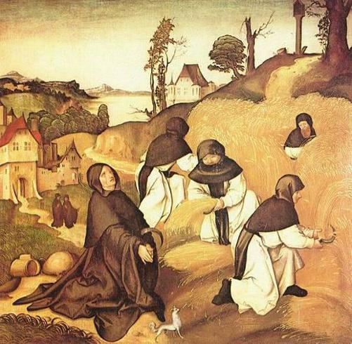
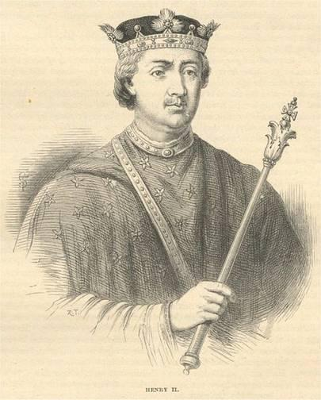

bölüşülmesinde Sivas ve Kayseri Zunun’a bırakıldı (1143 – 1144).
1144 yılında Anadolu Selçuklu Sultanı Mesut, Danışmendoğlu emir’i Aynüddevle’nin elinden
Ceyhan, Elbistan ve havalisini alarak, oğlu Kılıç Arslan’ı buraya emir olarak atadı. Daha
sonra da tekrar Malatya’yı kuşattı. Ancak Danışmendoğulları Doğu Roma İmparatoru Manuel
Komnenos ile anlaşma yapmışlardı. İmparator Kilikya üzerine kuvvetli bir ordu ile yürüdü.
Bunun üzerine de Sultan Mesut Malatya kuşatmasını tekrar kaldırmak zorunda kaldı.
Kilikya’da hastalanan İmparator da geri döndü.
1144 yılında Urfa Müslüman kuvvetlerce Haçlıların elinden geri alındı. Selçuklu devletine
tabi olan Irak ve Suriye’de hüküm süren Türk Atabekler devletinin ünlü hükümdarı İmadettin
Zengi, Urfa üzerine yürüyerek kuşattı. Urfa kontu II. Joscelin kenti savunuyordu. Aralık 1144
de Urfa İmadettin Zengi’nin eline geçti, Urfa Haçlı kontluğu ortadan kalktı. Bu olay Suriye ve
Filistin’deki diğer Haçlı devletlerinin büyük korkuya kapılmasına sebep oldu. Aynı endişe
Batı Avrupa’da da kendini gösterdi ve yeni bir Haçlı seferinin yapılmasına neden oldu.
İmarettin Zengi Urfa’dan ayrılınca, kentteki Ermeniler kenti geri almak için komplo kurdular
ama başaramadılar. Elebaşları öldürüldü. 300 Ermeni aile kentten çıkarılarak yerlerine Yahudi
aileler yerleştirildi. Haçlı seferlerinden beri Yahudiler Müslümanlar ile sıkı bir işbirliği
yapıyorlardı.
1144 yılına gelindiğinde, Büyük Selçuklu Sultanı Sencer Karahanlı ülkesini yitirmişti.
Harzemşah Atsız ile sürekli savaşıyordu. Sencer’in Batıya hiç ilgisi kalmamıştı. 1144 de
Sultan Sencer 3’cü defa Harizm ülkesine girdi. Hazarasp kalesini fethederek Harzemşahların merkezi Gürgane önlerine geldi. Atsız Sultan’ı bir defa daha tanıdığını bildirdi ve affını rica 111
etti. Araya Müslüman din uleması girdi. Müslüman kanı dökülmesin diyerek savaşılmadı.
Sencer geri döndü. Atsız, Merv hazinesinden almış olduğu mücevherat sandıklarını, mühürlü
olduğu halde, Sencer’e geri vermişti.
Bu karışık ortamda Oğuzlar da yaptıkları yağmalarla, ganimet akınları ile Horasan’da
varlıklarını duyuruyorlardı. Oğuzlar 1144 baharında Buhara’yı yağmaladılar. Kent surlarını
yıktılar. Afganistan’daki savaşçı Gurlar ise Herat’ı aldılar. Bu sırada Karahitaylar tarafından desteklenen Karluklar, Karahanlı ülkesinde yaşayan bazı Oğuz kabilelerine baskı yaptılar.
Oğuzlar da Ceyhun nehrini geçerek Kuzey Afganistan’a girerek Belh civarına yerleştiler. Bu
Oğuzlar, Üçoklar ve Bozoklar diye ikiye ayrılıyorlardı. Boy Beyleri ve Kol Beyleri vardı.
Üçoklar’ın Kol Beyi Tuti Bey, Bozoklar’ın Kol Beyi Korkut Beydi. Kaynaklar Kol Beylerinin
üzerinde bir Kağandan bahsetmiyorlar, ancak beylerin çok zengin olduklarını söylüyorlar.
Irak Selçuklu Sultanı Mesut’un üzerinden Sultan Sencer’in hem desteği ve hem de baskısı
kalkmıştı. Mesut kendini biraz güçlenmiş hissedince Musul egemeni Zengi üzerinde otorite
kurmaya girişti. Zengi ise Irak Selçuklu Sultanı Mesut’a hediyeler yollayarak onun kendi
üzerine askeri bir harekâta girişmesini sürekli önlüyordu. Bu sırada Irak Selçuklu Sultanı
Mesut, veziri İzzülmülk’ü öldürüp mallarını müsademe edince, önce Çavlı Candar ve sonra da
tüm komutanlarla arası açıldı. Komutanların başka bir Selçuklu prensini tahta çıkaracağından
çekinen Mesut Bağdat’a kaçtı.
Çavlı Candar çok kuvvetlenmişti. Onunla iş birliğine giden Irak Selçuklu Sultanı Mesut,
Sultanlık yetkilerinden çoğunu Çavlı’ya devretti. Atamalar, İkta dağıtımları, askerlerin emir
kumanda zinciri hep Çavlı’ya bağlandı.
112
2. Haçlı Seferi Başlıyor
Urfa Haçlı Kontluğunun Türklerin eline geçmesi, hem Antalya’yı ve hem de Kudüs Haçlı Krallığını büyük risk altına sokmuştu. Kudüs Kraliçesi Melisende (1131 – 1152) ve Antakya Prinkepsi Raymond de Poitier (1136 -1149), yardım istemek üzere piskopos Huge başkanlığında bir heyeti Roma’ya yolladılar. Benzer bir heyeti Çukurova Ermenileri de
yollamıştı. Ancak Avrupa’ya, elçilerden çok önce, Urfa’nın Türkler tarafından alındığı ve
Hıristiyanların Türklerin elinden çok acılar çektiği haberi gelmiş ve yayılmıştı. Papa III.
Eugenius elçilik heyetlerini dinleyerek yardım hazırlıklarına başladı. 1 Aralık 1145 tarihinde Papa, Fransa Kralı VII. Louis ve Fransa’da ikamet eden tüm Hıristiyanlar için bir ferman (bulla) yayınladı.
Papa III. Eugenius bu fermanında, Urfa (Rohais, Edessa)’nın ve pek çok Hıristiyan kalesinin
Müslümanlar tarafından geri alındığını, kent başpiskoposlarının, din adamlarının ve
Hıristiyanların öldürüldüğünü, kutsal emanetlerin ayaklar altında çiğnendiğini, Doğu
Kilisesinin ve bütün Hıristiyanlığın büyük bir tehlike altında olduğunu söylüyordu. Doğudaki
din kardeşlerine yardım etmek için yeni bir Haçlı seferi şarttı. Haçlı seferine katılacak
olanların tüm günahları affedilecek, eşleri, çocukları, malları Kilisenin ve Papanın
himayesinde olacaktı. Haçlı seferine gideceklerin dönüşüne veya akıbetleri belli olana kadar
malları hakkında herhangi bir yasal muamele yapılması yasaklanıyordu. Sefere çıkanların
borcu varsa, borç faizleri papalık tarafından affettirilecekti. Ayrıca sefere katılmak için paraya
ihtiyacı olanlar mülklerini kiliselere ve din adamlarına ipotek ettirebilirlerdi.
Enteresan olan bir konu da, bu yeni haçlı seferinin Urfa’nın Haçlılarca kaybından sonra
düzenlenmiş olmasına rağmen, Urfa’nın geri alınmasından hiç bahsetmemesidir. Vurgu
Kudüs Kilisesi için yapılmıştır. O dönemde Kudüs’ün kaybedilmekte olduğu korkusu Kiliseyi
sarmıştı.
1145 yılında I. Leon’un Constantinopolis’de esir tutulan oğlu II. Toros kaçarak Kilikya’ya geldi. Babasının hâkim olduğu topraklarda hak iddia ederek, yavaş yavaş onları geri
kazanmaya başladı. Bu sırada Kilikya en üst hâkimiyeti Doğu Roma İmparatorluğundaydı.
1145 yılında Çin’de ilk otopsi yapılıyordu. Tıp Çin’de büyük ilerlemeler kaydetmişti. Tıp
konusunda da Ansiklopediler yazılıyordu. Bunlardan biri daha sonra Moğollar tarafından
Farsçaya çevrilecektir (Tansukname).
1146 yılında Anadolu Selçuklu Sultanı Mesut, Doğu Roma İmparatorluğunun Ermenilerle ve
Haçlılarla olan ilişkilerini engellemek amacı ile Brakena (Prakana) kalesini aldı (1146).
Geçen son senelerde Anadolu Selçuklu devletinin sınırları Doğu Roma aleyhine olarak
genişlemişti. Selçuklu askeri hareketlerini durdurmak maksadı ile İmparator Manuel ordusu ile Batı Anadolu üzerine yürüdü. Menderes nehri havzasını ele geçirdi, sonra Konya üzerine
döndü. Akşehir’e vardığında karşılaştığı bir Selçuklu ordusunu yendi. Selçuklular çekildiler,
Roma Akşehir’i yaktı.
113
Bu sırada Anadolu Selçuklu Sultanı Mesut, yine Malatya’yı kuşatmıştı. Kuşatmayı kaldırarak,
süratle Konya önlerine geldi. Yapılan meydan savaşını Anadolu Selçuklu Sultanı Mesut
kazandı. Bu meydan savaşı yapılmadan Haçlıların geldiği öğrenilince iki ordu birbirinden
ayrılmış olabilir. Doğu Roma İmparatoru Manuel’in savaşıp ta mı yoksa savaşmadan mı
Konya önlerinden çekilip, geri döndüğü kesin değildir. Bu geri çekilişten sonra İmparator
Manuel, Sultan Mesut ile bir daha savaşmak isteği göstermemiştir. Konya’nın müdafaası
sırasında Sultan Mesut’un damadı İoannes (Yuannis) Çelebi büyük yararlılık göstermişti.
İoannes Çelebi, Gavras ailesindendir ve Doğu Roma İmparatorunun kuzenidir. Müslüman
olmuştur.
Tam bu sırada İmparator Manuel’in 2. Haçlı seferinin başladığından haberi olmuştu.
İmparator, Anadolu Selçuklu Sultanı Mesut ile saldırmazlık anlaşması imzaladı. Bu anlaşma
daha sonra Haçlılar ve Batılılar tarafından çok eleştirilmiş ve Manuel Hıristiyanlığa ihanet
etmekle suçlanmıştır. Ancak daha sonra meydana gelen olaylar ve özellikle Almanlarla Doğu
Roma arasındaki olaylar göstermektedir ki, Manuel’in Türklerle yaptığı saldırmazlık
anlaşması, Doğu Roma İmparatorluğun lehine olmuştur. Ancak, bu aynı zaman da Haçlıların
aleyhine bir durumdur. Etik olup olmadığı tartışmalıdır. Haçlıların geleceğinin duyulması
Doğu Roma’yı nasıl korkutmuş ise Rum Selçuklularını da öyle korkutmuştur. Bu korku her
iki tarafın anlaşmaya yanaşmasındaki temel etkendir.
2. Haçlı seferinin başlaması Doğu Roma İmparatorluğunun Batı politikasını da alt üst etmiştir.
1130 yılında II. Roger Palermo’da krallık tacını giyince Doğu Roma ve Alman İmparatorlukları birbirine yaklaşarak müttefik olmuşlar ve sonra da aralarındaki bağları
İmparatorluk aileleri içindeki evliliklerle sağlamlaştırmışlardı. 2. Haçlı seferi bu beraberliğe
darbe vuracaktı.
İmparator korkuyordu. Haçlılar Türkler için mi yoksa Constantinopolis için mi geliyorlardı.
İlk işi başkent sur ve kulelerinin tamiri oldu. Constantinopolis olası bir saldırıya karşı
hazırlanmaya başladı.
Rum Selçuklu Sultanı Mesut da hemen Haçlıların geçiş yollarına yakın olan kent ve kaleleri
tamir etmeye ve tahkim etmeye başladı. Geçitler ve dağlar tahkim edildi. Ayrıca bütün
Müslüman emirliklere ve devletlere mektuplar yollayarak, Haçlı tehlikesini anlatıp, yardımlar
istedi. Bu mektuplarda Sultan gelmekte olan Haçlı ordusunun büyüklüğünü özellikle
vurguluyor, “ bütün nehirlerin suları bunların susuzluğunu gideremez “ diyordu. Bu çağrılar
üzerine özellikle Anadolu’nun her yerinden Türkmenler Sultan Mesut’a yardım için geldiler.
Tabii Türk kabileleri yardım derken yağma sonucu elde edecekleri zenginlikleri
düşünüyorlardı. Düşündükleri Selçuklular değil kendi menfaatleriydi.
Zaten nasıl Manuel Komnenos, Doğu Roma için korkuyorsa, Anadolu Selçuklu devleti de
kendi için korkuyordu. Kudüs Anadolu’daki Türkleri hiç ilgilendirmiyordu. Haçlıların
Kudüs’e gitmek için Anadolu’dan geçmeleri için aslında bir sebep yoktu ve bu nedenle
Türkler Haçlıların neden Anadolu’dan geçeceklerini anlamıyorlardı. Hâlbuki Haçlılar bütün
Müslümanların bir birlik oluşturduğunu sanıyorlardı. Bu yanlış fikre nasıl kapılmışlardı belli
değildir. Aslında ne Müslümanlar ve ne de Haçlılar kendi içlerinde bir birlik değillerdi.
114
Kentler Burjuvalarındır
Batı Avrupa’da Burjuvalar
isteklerinde direniyor ve
örgütlü bir mücadele
veriyorlardı. Çoğu yerde
burjuvalar isteklerini
senyörlerden büyük
paralar karşılığında satın
alıyorlardı. Burjuva birliği
(Komünle), senyörler
arasında yazılı ve mühürlü
bir anlaşma
imzalanıyordu. Bu
anlaşma özgürlük
sözleşmesiydi. Böylece
senyörler haksız
istemlerinden vazgeçiyor, burjuvalar bağışıklık kazanıyordu. Özgürlük sözleşmesi ile kişiyi
kişiye bağlayan tüm yükümlülükler sona ererek kent halkı kişisel olarak bağımsızlık
kazanıyordu. Senyörlük hakları, kent dahilinde büyük ölçüde sınırlanıyordu. Keyfi davranışlar
ve efendinin ticari ayrıcalıkları sona eriyordu. Mal ve paranın serbest dolaşımı ile ticaret
güvenceye alınıyordu.
Yer yer özgürlük sözleşmesi imzalanınca komünler de ortadan kalkıyordu. Ama burjuva
örgütlenmesinin devam ettiği haller de vardı. Örgütlenme dağılsın veya dağılmasın, özgürlük
sözleşmesinin imzalanması ile birlikte, burjuva topluluğu hukuksal bir kimlik kazanıyor,
senyörün yetkilerinin bir kısmını alıyordu. Artık burjuvalar da savaşçı sınıf gibi ama onlardan
biri olmadan silah taşıyordu. Burjuvaların silahları senyörün değil kentin emrine verilmiş
silahlardı. Olağan üstü yargılama yetkisi de senyörden alınmıştı. Burjuvalar zaten mali
bağımsızlık içindeydiler. Burjuvalar kentlerde genel meclisler şeklinde toplanarak ortaklaşa
kararlar almaya başladılar. Kentin yönetimini de üstlenmişlerdi. Günlük görevler, adli işler ve
kamu parasının idaresi burjuvalar arasından seçtikleri küçük bir heyete bırakılmaya başlandı.
Aslında daha kentler ufaktı. Kentlerdeki burjuvalar ise ancak birkaç yüz kişi kadardı. Ancak
önemi sayısında değildi. Feodal toplumun içinde ona yabancı ve onun antitezi olan bir sınıf ve
siyasi örgütlenme ortaya çıkmıştı. Zaman feodalitenin aleyhine ve burjuva sınıfının lehine
çalışacaktı.
Burjuva kenti ortaya çıkınca, köylünün üretimi bir vitrin kazanmış oldu. Üretim hem
sergileniyor ve hem de depolanıyordu. Bu, parası olanlarda, soylularda ve yüksek mertebeden
din adamlarında bir tüketim hevesi yarattı. Üretim daha rahat ve daha kar getirir tarzda
satılmaya başlandı. Kent sadece vitrin değil aynı zamanda bir tüketim merkezi olmuştu.
Tarımdaki gelişme köylünün üretimini arttırmıştı, artan malın kentlerde pazarlanması paranın
kent kasalarına girmesine ve nakit servetin artmasına sebep olmuştu. Tüccarlar tarım ürünleri
satışından kar sağladıkça, köylüye kredi açmaya başladılar. Böylece köylü nakit ihtiyacını
çözüyor, para ile satın alabileceği ihtiyaçlarını gideriyor, ama öbür yandan faiz ödeyerek
115
kazancının bir kısmını tüccara geri veriyordu. Tüccar da hem malın satışından ve hem de
verdiği borcun faizinden gelir elde ederek, karını arttırıyordu. Ancak bu uygulamayı
Hıristiyanlardan çok daha fazla Yahudi tüccarlar yapıyordu. Hıristiyan dini faizi
yasakladığından, dini bütün bir Hıristiyan tüccarın faizle borç vermesi mümkün değildi.
Başlangıçta tefecilik ürün üzerinden yapılırken, kısa sürede taşınmaz mallar üzerinden de
yapılmaya başlandı. Taşınmaz mallar rehin tutularak köylüye borç veriliyordu. Paranın
dolaşım hızı gittikçe artıyor, tarım ekonomisi ve tarım işletmeleri de gittikçe dışa açılıyordu.
Şövalyeler, din adamları ve senyörlerden oluşan eski üçlü düzen ve servet hiyerarşisi
bozulmuştu. Özgün ekonomik yetenekleri ile burjuvalar ayrıcalıklı hukuksal statüye
kavuşmuşlardı. Kentteki gelişmeler, köylüler için de örnek oluşturmaya başladı. Köylü zaten
tarımın gelişmesi ile birlikte müşterek hareket etmenin avantajlarını görür olmuştu. Köyden
ayrılanlar, kentlere gelerek çalışıyor, kısa sürede burjuvalarla bütünleşiyorlardı. Köylüler de
senyörlerinden feodal yönetimin yazılı hale getirilmesini ve feodal geleneksel senyör
davranışlarının hafifletilmesini istemeye başladılar. Kent düzeni feodal sistemi sarsmaya
başlamıştı.
Kilise ise, henüz, feodalite karşısında bağımsızlık sorununu çözmüş, organlarını yeniden
yapılandırmıştı. Bu durumda, Kilisenin dünyevi zenginlikler karşısında tutacağı yol Kilise
gündeminin başına oturdu. Bu konu zaten bir iki asırdır enine boyuna tartışılıyordu. Konu ta
ilk Hıristiyanlardan beri Hıristiyan din adamları içinde çelişki yaratan bir konuydu. Ancak,
bulunulan zaman kesitinde, zenginlikler gittikçe artarken ve yeni ekonomik gelişmeler
oluşurken konunun önemi artmıştı. Pek çok rahip için, Kilisenin siyasi otorite karşısındaki
bağımsızlığı sadece bir ilk adımdı. Yola devam edilmeli ve ilk yılların Hıristiyan yaşamına
geri dönülmeliydi. Bunun için, dünyevi aşırı isteklerden, iktidar zevkinden, lüks
düşkünlüğünden vazgeçilmeliydi.
Bu çerçeve içinde Cluny tarikatı da eleştirilmeye başlandı. Feodal sistemin üç sınıflı yaşamına benzer bir tarzda yaşayan Cluny rahipleri, çalışmadan, rahat bir yaşam sürdürüyorlardı.
Ortaya sorular sorulmaya başlandı. “ Bir dindarın, görkemli yapılar içinde, lüks giyinerek,
aşırı beslenerek, rahatına düşkün bir şekilde senyörlerin hayat tarzına benzer bir yaşam
sürmesi doğru muydu? “ Artık Gregorius reformları aşılmış, eleştiri Kilise organlarından Kilisenin kalbine yönetilmişti.
Din adamlarının zenginliğine karşı bu eleştirisel yaklaşımı yayılıyor, her yerde
tomurcuklanıyordu. Kentlerin alt tabakalarında yaşayan yoksul halk kesimleri bu eleştirisel
yaklaşıma hemen taraf olmuşlardı. Lombardiya kentlerinde, rahiplerin yoksul bir yaşam
yaşaması konusunda, keşişler arasında güçlü bir hareket gelişti. Bu hareketten yakın gelecekte
“ Patarenler “ hareketi oluşacaktı. Bu düşünce, Roma kentinde de harekete geçti. Brescia’lı
Arnauld adlı bir kişi, Papalık iktidarına karşı Roma komününü kurdu.
Kilisenin ayrıcalıklarına karşı, dünyevi güçler gittikçe daha kıskançlaşıyorlardı. Bu dünyanın
egemenleri, bütün uyrukları gibi rahipleri de yargılamak, boyun eğdirmek ve sömürmek
istiyorlardı. Kilisenin manevi gücüne karşı çıkabilmek için uygun bir ortam hazırlıyordu.
116
Yahudi Düşünürler
Gazali’nin etkisi, Müslüman dünyası dışına da taşmıştı. İspanya’da Yahudi filozof Josef İbn Saddık (öl. 1143), İbn Sina’nın kanıtlarını kullanarak Tanrının varlığını ispatlamaya girişti.
Tanrı’yı anladığını söylemek, Tanrı’nın mükemmel olmadığı manasına gelirdi. Tanrı
hakkında söylenebilecek en eksiksiz söz, Tanrı’nın bizim akıl yeteneklerimiz üzerinde olduğu
ve kavranılamaz olduğu idi. Tanrının dünyada ki eylemlerinden olumlu sözlerle bahsedile
bilinirdi, Ama özü hakkında bu yapılamazdı.
Toledo’lu Yahudi Doktor Halevi (1075 – 1141), Gazali’yi izlemişti. Tanrı’nın varlığının mantıkla gösterilmesinin dini bir değeri olmadığı için, Tanrı akılla ispatlanamazdı. Tanrı
uzaktaydı ve kişilik dışıydı. Mükemmel olan Tanrı, mükemmel olmayan dünyayı nasıl
yaratmıştı. Mükemmel olan Tanrı’nın, mükemmel olmayan bu dünya ile bir ilişkisi olabilir
miydi? Akıl bu soruların cevabını bulamaz, olsa olsa kuşku yaratırdı. Filozoflar Tanrısal akıl
ile kendi akıllarının birleşebileceğini düşünerek, kendilerini aldatıyorlardı. Sadece
peygamberler Tanrı hakkında doğrudan bilgi sahibi olabilirlerdi. Peygamberlerde filozof
değildiler.
Halevi, Gazali gibi düşünüyordu. Tanrı hakkında tek güvenilir bilgi dinsel deneyimle elde
edilebilinirdi. Bu da özel dinsel yetenek isterdi. Halevi’ye göre, özel dinsel yetenek sadece
Yahudilerin bir ayrıcalığı idi. Her Yahudi, Tanrı emirlerinin eksiksiz uygulaması ile
peygamber ruhuna sahip olabilirdi. Peygamber ruhuna sahip olan kişi ise, kendi özelinde,
Tanrı’ya ulaşabilirdi. Yahudiler için doğal olan bu yol, Goyim (Yahudi olmayanlar) için de
olanak dışı değildi. Tanrı, bütünleyici bir hakikat olarak, her insanda potansiyel olarak vardır.
Özel deneyimle karşılaşılan Tanrı, sadece deneyim sahibinin Tanrısıydı. Ancak ulaşılan bu
Tanrı ile Tanrı’nın kendi özünü birbiri ile karıştırmamak gerekirdi. Peygamber ruhuna sahip
olanlar Tanrı’yı bildiklerinde, O’nun kendini bildiği gibi bilmezler. İnsanın Tanrı bilgisi,
Tanrı’nın eylemlerini bilme bilgisidir. Güneş batmış olmasına rağmen, onun ışıklarını görmek
gibi bir şeydir.
117
Yeuda Halevi
Maimonides ve Halevi
Yeuda Halevi (Judah Halevi, 1075’te Tuleda’da doğmuştu. İbranice ve Arapça eğitim görmüş
ve şiirler yazmıştı. Gençken Moses Ibn Ezra ile ve Granada, Seville ve Saragossa’nın diğer
önemli şairleriyle ilişkiler kurdu. 1090’dan sonra Endülüs’ün Almoravideler tarafından istila
edilmesi üzerine Granada’ya yerleşti. Sonraki yirmi yıl boyunca Hıristiyan İspanya’da kentten
kente dolaşdı. Daha sonra Toledo’ya yerleşerek, yardımcısı Solomon ibn Ferrizuel öldürülene
kadar tıpla uğraşdı. Müslüman İspanya’ya döndüğünde Cordoba, Granada ve Almeria’ya gitti.
Ayrıca, Abraham ibn Ezra ile Kuzey Afrika’ya yolculuk yaptı. Kutsal Topraklar’a gitmeye
karar verdikten sonra, 1140’da İskenderiye’ye gider, dört ay sonra 1141’de öldü.
İbranice yazılmış birçok şiirinin yanında Halevi, en bilinen eseri “ Kuzari’yi “ kaleme
yazmıştır. Yazara göre, bu eseri Karay hareketindeki sapkın görüşlerle mücadele etmek için
yazmıştı. Çalışma, Hazar kralının Yahudiliğe geçişini anlatır. Kuzari, edebi bir kurgu
olmasına karşın tarihi bir gerçeğe de dayanıyordu. X. yüzyılda Hasdia ibn Şarput, Yahudi
118
inancını benimseyen Hazar Kralı ile ilişki kurmuştu.
Kuzari’nin Birinci kitabı farklı ideolojilerin tanıtımıyla başlıyordu. Felsefi, Hıristiyan,
Müslüman ve Yahudi ideolojileri anlatılıyordu. Kitapta, Kral soruyor, Haham cevaplıyordu.
Tanrı İsrael’i kendi özel halkı olarak seçmişti. Yahudiliğin Tanrısı felsefecilerin tanrısı
değildi, inancın Tanrı’sıydı. Peygamberlerin yolu, felsefi düşünceden daha üstündü. Bu
gözlemi yapan Halevi, dolaylı yoldan, yanlış yola saptığını düşündüğü Aristoteles
metafiziğini de eleştiriyordu.
Kitapta Haham anlatmaya devam ediyordu. Haham, konuşmasında, Tanrı’nın Yahudi halkının
tarihindeki öneminin nedenini vurguladı. Tanrı’nın varlığı ve Yahudi ulusunu koruduğu
ispatlanmıştı. Ulusun hayatına Tanrı’nın nasıl müdahale ettiğine İsrael ve Mısır şahit
olmuşlardı. Yahudiler sonuçta Tanrı’dan çok özel vahiy almışlardı. Kral ve Haham
hemfikirdiler. Yahudiliği sonradan kabul edenlerin, Yahudi doğanlarla aynı olmayacağı çünkü
onların vahiy alamayacağı artık anlaşılmıştı.
Haham, peygamberlerin, diğer insanlara göre üstün konumunu açıkladıktan sonra bütün
insanların, peygamberlerin öğretilerine dayanan gerçekleri kabul ettiklerini anlattı. Doğa
kavramı üzerine tartıştıktan sonra haham, Yahudilerin nasıl ortaya çıktığından bahsetti. İsrael,
birbirine benzeyen bireylerden oluşan küçük bir topluluk değildi, Tanrı’nın müdahale etmesi
sonucunda oluşmuştu. Tanrı İsraellileri, esaretten kurtarmak için Moşe’yi seçmiş ve onları
birlik haline getirmişti. Onların adına gerçekleştirdiği mucizeler Sina Diağı’nda Tora’nın
verilişiyle doruk notasına ulaşmıştı.
Hahamın açıklamalarından tatmin olan kral, Yahudi inancını kabul etmeye artık hazırdı.
Ancak hahama iki soru daha yöneltti: Tanrı neden bütün insanlık yerine sadece tek bir halkı
seçmişti? Ve bedenin ölümünden sonra ruh için bir ödül-ceza sistemi var mıydı?
Haham derki, Tanrı belli bir halk, toprak ve dil seçerek Kendini açıklamıştı. Bu eylemler
Tanrı’nın varlığının tek gerçek kanıtıdır. Evrenin düzeni, hiyerarşik olarak yapılanmıştır ve
peygamberleri içerir. Adem ve oğulları, Nuh ve İsrael halkı, bunların tümü mineral, bitkisel,
hayvansal ve akli düzeylerin üstündedirler. Böyle bir şema Aristoteles öğretisinin genel
düzenine benzer.
Halevi’ye göre, Akıl ile birleşmeden peygamberlik öğretisine ilerleyen süreç, aşamalı ve
doğal bir süreç değildir. Akılla felsefe çalışarak yükselmek mümkün olduğu halde,
peygamberlerin seviyesine erişmek için Tora çalışmalarında da gelişmek gereklidir. Bu yol,
Tanrı’nın seçilmiş halkına ayrılmıştır. Bu seçime paralel olarak, Tanrı, Kutsal Toprakları da
vahyin gerçekleşeceği yer olarak belirlemiştir.
Benzer şekilde, İbranice dili Halevi’nin düşüncesinde önemli bir yere sahiptir:
“İbranice özünde, diğer dillerden hem geneksel hem de akılsal açıdan daha asildir. Geleneksel
olarak, İbranice, Avraam ve Hava’ya Tanrı’nın konuştuğu dildir ve onlar da İbranice
konuşmuştur... Üstünlüğü mantıksal olarak, bu dili seçen kişilerin birbirlerine hitap etmek,
özelikle de peygamberliklerine dair düşüncelerini iletmek, dua etmek, şarkı söylemek ve
övgülerini dile getirmek için kullanmalarında görülebilir.”
119
Ayrıca Haleviye göre, Tanrı’nın Musa yoluyla ilettiği ilahi emirler kusursuz biçimde sadece
İsrael’de uygulanabilir. Tanrı bu şekilde İsrael’in yaşamasını garantilemiştir.
Bunun üzerine kral şöyle der:
“ Durum hakkında düşündüm ve Tanrı’nın sizi sürekli kılmak konusunda gizemli anlamlara
sahip olduğunu gördüm. Dünyadaki milletler sizi aralarında bölebilir, akıllı ve seri olduğunuz
için sizi hizmetkarları yapabilir ve Tanrı’dan geldiğiniz için sizi asker de yapabilirler.”
Kuzari, hahamın Hhazar topraklarını, Yeruşalayim’e gitmek üzere terk etmesiyle son bulur.
Kutsal Topraklara olan bu bağlılık, Halevi’nin Sion’u övdüğü diğer eserlerinde de yer alır.
Şiirlerinin birinde, Yeruşalayim’i en ihtişamlı ifadelerle anlatır.
“ Tanrı’nın peygamberlerine konuştuğu o yerlerde bir dolaşabilsem! Kim bana, oralara uçup
gitmem için kanat verecek? Kırık kalbimin parçalarını engebeli dağların üstünden taşırdım.
Eğilir yüzümü yerlere koyardım, taşlarını severdim. Toz toprağın beni zavallılığa iterdi.
Atalarımızın mezarları başında dururken ağlardım. Hebron’da gömülenlerin yanında yas
tutardım. Ormanlarında, düzlüklerinde yürür, Gilad’da durur, Abraim dağını hayranlıkla
izlerdim... Toprağının havası ruhun yaşamıdır, tozunun taneleri uçuşan mürdür, nehirlerin
kovanlardan akan baldır... Bir zamanlar mabetlerin durduğu, Ark’ın saklandığı topraklarında
çıplak, yalınayak yürümek kalbimi zevkle doldurur.”
Böyle lirik bir anlatım Halevi’nin maneviyatının coşkusunu yansıtır. Yunan düşüncesini Tora
ile uzlaştırmayı amaçlayan diğer Ortaçağ düşünürlerinin aksine Halevi bunu yapmayı
reddeder. Bu tip düşüncelerin olduğu bir ortamda, Yahudileri atalarının Tanrısını yeninde
keşfetmesi için teşvik eder. İnanca böyle bağlanarak Yahudilerin, Yahudi tarihinin
geçmişindeki ihtişamına kavuşabileceğine inanır ve bu şekilde Maşiah’ın (Mesih) gelişine
umutla bakar.
120

Sevgiyle Aklı Ayırma
Cisteecium tarikat üyeleri çalışıyor
Bu sırada düşünce ve edebiyat, Batı dünyasında tekrar gelişmeye başlamıştı. Maddi
kaygılardan ve dünyevi tutkulardan gittikçe kurtulan ruhban sınıfı artık entelektüel yaşama
daha fazla zaman ayırıyordu. Suriye’den, Anadolu’dan Arapça ve Yunanca el yazmaları
geliyordu. İspanya’da, Hıristiyanlarca ele geçirilmiş olan Toledo’da, İtalya’da Piza ve
Roma’da eski eserler tercüme ediliyordu. Monte Cassino manastırının kitaplığı XI. Yüzyıl
ortalarında tekrar kurulmuştu. Monte Cassino manastırında çeviriler yapılıyor, el yazmaları
Latince bilen rahiplerin hizmetine sunuluyordu.
Uzun zamandır en etkili düşünce merkezleri manastırlardı. Şimdi Liege, Tours, Angers, Le
Mans, Chatres ve Paris, manastırlar dışındaki en önemli düşünce odakları haline geliyorlardı.
Okullar, kırsal alanda bulunan manastırlardan kentlere doğru yer değiştirmeye başlamışlardı.
Kentlere gelen ve para ekonomisinin getirdiği serbest ortamla karşılaşan okullar dışarıya
açılmaya başladılar. Okullarda öğreticiler (ders verenler), yan yana ama ortak bir disipline
bağlı olmadan derslerini verebiliyorlardı. Öğrenciler, bir okuldan diğerine, bir kentten
diğerine gidip gelerek değişik yorumları ve görüş açılarını dinleyebiliyorlardı. Dinleyicilerin
121
önünde yeni ufuklar açılmıştı. Yollardaki hacı ve tüccar trafiğine şimdi öğrenciler de
katılmışlardı.
Çok eski tarihlerden beri gramer ve söz söyleme sanatı okul müfredatlarının
vazgeçilmezleriydi. Latince ise düşüncenin tüm inceliklerini yansıtabilen bir dil olarak kabul
ediliyordu. Latince halkın dilinde kabalaşıyor, başka diller karışarak Latinceyi bozuyordu. Bu
dönemde halk Latince kullanmaktan vazgeçince dil de bozulmaktan kurtulmuş oldu. Roma
döneminin eski ve klasik eserleri üzerinde çalışılarak, bunlar yeniden canlandırılmaya
çalışılıyordu. Virgilius’a, Ovidius’a, Lucanus’a, Horatius’a ve diğerlerine derin bir hayranlık duyuluyordu. Hıristiyanlık öncesi, eski dinlere mensup yazarlara karşı duyulan güvensizlik ve
önemsememe bitmiş gibi görülüyordu. Hatta eski eserlerden Hıristiyan maneviyatını
kuvvetlendirmek için yararlanılıyordu. Bu arada da hümanist bir eğilim de uç vermeye başlıyordu. İlahiyat çalışmaları ve onun hizmetine koşulmuş olan felsefe de üzerinde çalışılan
konulardandı. Ancak, felsefede sanki bağımsızlığını isteyecekmiş gibi bir izlenim ortaya
çıkıyordu.
50 yıldan uzun bir süredir, felsefe, soru cevap tarzında tartışılarak öğretiliyordu. Bu metot
tartışma sırasında kullanılınca, ortada aklı kullanmaktan başka çare kalmıyordu. O zaman da
ortaya yeni sorular çıkıyordu. Bu sorunların en önemlisi “ genel olarak düşünülenler gerçek
miydi? “ sorusuydu. Anselmus’dan beri aklın kullanımı epey yol kat etmişti. Ama aklın
kullanımı ile birlikte hem diyalektik metotlar ve hem de kişisellik işe karıştı. Artık akıl hala imanın hizmetindeydi ancak gerçeğin araştırılmasında da asıl rolü oynuyordu.
Aklın önde gitmesi ve kullanılan metotlarda diyalektiğin öne çıkması bir düşünce özgürlüğü
yaratmıştı. Bu konuda başı Paris okulları çekiyordu. Batı Avrupa’da öğrenim için menşei belli
olmayan bir susamışlık başlamıştı. İnsanlar bilgili bir öğretmenin ders verdiğini duyunca onun
bulunduğu kente üşüşüyorlardı. Paris’te Abelard, dinleyicilerinin hepsini alabilecek büyüklükte salon bulamıyordu. Herkes bilginin eski eserlerin içinde yazılı olduğuna
inanıyordu. Bunları okuyarak anlamaya çalışıyorlardı. Ama dini çevrelerce aklın bu denli
özgürlük kazanması kutsal metinlerin saygınlığını ve hatta imanı tehdit eder görülmeye
başlamıştı. Paris okulunda başı Petrus Abelardus (Pierre Abelard) çekiyordu.
Bu tarihlerde, Burgonya’da, Clairvaux Cistercium tarikat ve manastırını Bernard yönetiyordu.
Bernard, tartışmasız döneminde Batının en güçlü kişisiydi. Papa II. Eugene ve Fransa kralı
VII. Louis, onun etkisi altındaydılar. Çok iyi bir hatipti. Gençler, onun tarikatına girebilmek için evlerini bırakarak, peşine takılmışlardı. Cistercium tarikatı, Benediktenlerin yaşamını eski
Cluny tarikatı tarzında yeniden örgütlemeyi amaçlıyordu. Bu çağlarda, daha önce anlatılan akıl kıvılcımları olsa bile, genel olarak Batı büyük bir sofuluk içinde yaşıyordu. Ancak, içsel
olarak bir duygu seli yoktu. Kuru bir sofuluk insanların yaşamını sarmıştı. Cistercium tarikatı,
inanca içsellik kazandırma çabasındaydı.
Daha önce bahsedildiği gibi, Canterbury piskoposu Anselmus (1033 – 1109) her şeyin kanıtlanabilir olduğunu düşünüyordu. Anselmus Tanrı hiç bir şey değildir ama bütün
yaratıkların en yücesidir diyordu. Anselmus ile çağdaş bir filozof olan Petrus Abelardus de (1079 – 1147), Paris’te, Teslis ve Kefaret konusunda akıl yürütmüştü. İsa, insanların
duygularını uyandırmak için çarmıha gerilmişti ve böylece insanlığın kurtarıcısı olmuştu.
Bernard, Abelardus gibi entelektüellere güven duymuyordu. Abelardus’u susturmaya yemin
etti. Abelardus’u, “ İnsan aklı ile Tanrı’nın ne olduğunun kavranılabileceğini iddia ederek,
Hıristiyan inancına duyulan saygıyı yok etmeye kalkışmakla “ suçladı. Onun için, Pavlus’a 122
atıf yaparak “ hiçbir şeyi muamma olarak görmüyor, hiçbir şeye aynada bakmıyor, Ama her
şeye yüz yüze bakıyor “ dedi. Aslında, Bernard’ın söylemiyle yola çıkınca, akıl ve sevginin
birlikte kullanılması olanak dışı oluyordu.
Bernard, 1141 tarihinde, kendi taraftarlarından oluşan Sens konsilinde Abelardus’u duruşmaya çağırdı. Bernard’ın taraftarları, konsilin dışında Abelardus’u hırpalayarak,
sindirdi. Konsilde, Bernard, Abelardus’a hitabetini kullanarak saldırdı. Abelardus kolayca
yıkıldı. Zaten, kuvvetli bir olasılık ile Parkinson hastasıydı. Bir yıl içinde öldü.
Bernard’ın Abelardus’u alt etmesi ile akıl ve sevgi Hıristiyan dünyasındaki filozofide
ayrılmıştı. Augustinus’un Teslis’inde sevgi (yürek) ve akıl bir bütündü. İbn Sina ve Gazali
gibi Müslüman filozoflar, aklın tek başına Tanrı’yı bulmaya yetmediğini söylemişlerdi, Ama
mistizm içinde sevgi ile sarılmış bir felsefe oluşturmuşlardı. Akıl, tek başına yetmese de, bu
felsefe içinde inkâr da edilmiyordu. Özellikle Gazali’den sonra, Müslüman düşünürlerin önde
gelenleri, daha sonra görüleceği gibi. Mistizm içinde aklı ve sevgiyi kaynaştırmaya
çalışacaklardı. Vardıkları nokta, felsefenin, sevginin ruhsallığından ayrılmaz olduğuydu.
Bernard ise akıldan korkuyordu. Aklı, aklın duygusal ve sezgisel kısmından ayrı tutmaya çalışıyordu. Bu tabii ki tehlikeliydi. Abelardus’a karşı tavrı komplocu idi, merhametten
uzaktı.
Tintern Manastırı
123
Hukuk gündeme giriyor
Bolonya
Sofuların hücumları bitmemişti. Parisli Gilbert de la Porée’ye sözlerini geri aldırttılar. Ancak, Paris’te öğrenci sayısı gittikçe artıyordu. Baskı, aklın gidişini durduramıyordu. Gelecekte,
Paris okullarından en usta diyalektikçiler çıkacak, Batı’nın büyük felsefe sistemi orada
oluşturulacaktı.
Haçlı seferleri, bütün vahşetine rağmen, ona katılanların ufkunu genişletmiş, zevkini rafine
etmişti. Bu insanların büyük bir çoğunluğunun dine bakışı da sofuluktan uzaklaşmıştı. Bu
insanların Paris’te olup bitenlere yaklaşımı hoş görülü idi. Bunlar arasından Paris okullarına
maddi katkıda bulunanlar bile çıkıyordu. Batı Laik düşüncesinin temelleri atılmaya
başlanmıştı.
Arap dünyası ile yakın temas, matematik ve tıp ilimlerini Batı Avrupa’ya sokmuştu.
Matematik ve tıp eğitimi, önce, Müslüman sınırlara yakın okullarda öğretilmeye başlandı.
Gittikçe de yaygınlaştı. Hukuk çalışmaları da başlamıştı. Kentleşme ve ticaret, toplumlara,
eski feodal adetlerin üstesinden gelemeyeceği sorunlar yaşatmaya başlamıştı. Bologna’da Roma hukuku tekrar ele alınıp, incelenmeye başlandı. Bu incelemeler ileride İmparatorluk
düşünü canlandıracaktı. Kilise de kendi hukukunu oluşturmaya çalışıyordu.
Paris’te olsun diğer kentlerde olsun okuyan öğrencilerin çoğu yoksuldu ve sefalet içinde
yaşıyorlardı. Bazı hayır sahipleri adlarına “ kolej “ denen misafirhaneler açtılar. Buralarda
124
öğrenciler doyurulup, barındırılıyordu. Kolejlerde manastırlara benzer bir disiplin
uygulanıyordu. Dominiken ve Fransisken gibi tarikatlar bir kütüphanesi ve toplantı salonu olan evler açtılar. Buralarda tarikatların keşişleri öteki öğretmenlerin muhalefetine rağmen
ders vermeye başladılar.
Kilise, katedral ve manastır yapımında doludizgin gidiliyordu. Devasa yapılar hem yapılıyor
ve hem de süsleniyordu. Süsleme yapıma yetişmişti. Artık süsleme ve etkileme amacı ile
heykeller kullanılıyordu. Süslemeler başlangıçta figüratifti. Ama heykeller kullanılmaya
başlandığında tema geometrik ve bitkiselden insan temasına geçmişti. İnsan süslemenin
merkezine geldi oturdu. Hala geometrik ve bitkisel tema kullanılıyordu ama bunlar yardımcı
unsur durumuna gerilemişti. İnsanın süslemelerde kullanılması Hıristiyanlık öncesi sanatın
ortaya tekrar çıkışı demekti, ama kutsal mevzuların ele alınması, bu gerçeği örtüyordu.
Roman sanatının sanatçısı Tanrı’nın mutlak gücünü anlatmak istiyordu. Kullandığı insan dâhil
tüm biçimler sadece birer araçtı. Kullandığı figürleri doğaüstü bir ortamda yaşatarak Tanrı’nın
mutlak gücünü duyuruyordu. Binaların dışyüzü, kapıları süsleniyordu. Kullanılan sütunların,
sütun başları ilk süslenen yerlerdi.
Dominic
Francis
125
İç Dünyanın Peyizajı
Song dönemi resim örneği
Çin başkenti, resim akademisinin merkezi, bir müze kent olmuştu. Sadece bir sanat merkezi
değil aynı zamanda mamur bir kentti. Saraylar, köşkler, pagodalar (Budist dini yapısı) kentin güzelliğine güzellik katıyorlardı. Song’ların hür, anlayışçı ve katkıcı ortamında resim okulu şaheserler yarattı. Yapılan peyzaj resimleri şiire ve felsefeye bağlı yorumlardı. Peyzajlar
sulandırılmış çini mürekkebi ile ince bir ipek üzerine çiziliyordu. Bu ipek eskiyince kehribar
rengine bürünen bir ipekti. Resimlerin temel ayrıntıları ortadaydı ama genel olarak bir
belirsizlik yansıtıyordu. Ressamlar Taoizm düşüncesine dalıp vecd haline geçtiklerinde,
mistik idealizmin etkisi altında, olabilir durumdan olmuş duruma geçen düşleri peyzaj olarak
yansıtmışlardı. Bu düşlerde veya resimlerde, doğanın gizemi vardı, filozof ressamın doğa
kadar gizemli iç dünyası vardı. Bu resimler evrensel ruhu arayan ve onun içinde eriyen
resimlerdi.
Resim Taoist ve mistik düşünce olurken, Konfüçyüs düşüncesi de bir yenilenmeye girdi. Hür
düşünce ortamında Budist düşünce, Taoculuk ve Konfüsyusculuk birbirleri ile kalem
kavgasına girişmişlerdi. Şao Yang (1011–1077) şöyle diyordu: Evrenin kanunu tek
olduğundan, İnsan gökte, yerde ve bütün zamanların varlıkları ile biridir. Herkesin ona
katıldığı yaşamsal ruh da tekdir.
Çu Hi (Chu-Hsi) (1130–1200), en eski Çin kavramları ile Budizm’in getirdiği Hindu görüşlerinin karıştığı bir evrimci düşünceyi geliştirip, son haline getirmişti. Ancak, vardığı
noktada ruh bilime her türlü yolu kapadı. Çin’de etkisi büyük oldu, ancak O, Çin felsefesini
de bir labirente hapsetmişti. Ondan sonra Çin’de felsefe, XX. yüzyıla gelene kadar kendine
çıkış yolu bulamayıp, paralize bir şekilde kalacaktı.
126
Çu Hi’ye göre evren Tai-ki adlı bir yüce varlığın eylemi üzerine kurulmuştu. Tai-Ki de Wu-
Ki’den doğmuştu. Tai-ki ebedi, yarı maddesel, zekâsız ve iradesizdi. Ama bütün kanunların
üzerinde yer alır, temel ilkedir ve evrenin düzenidir. Tai-ki doğayı ezelden beri belli
aralıklarla düzenler ve bu ebede kadar böyle olacaktır. Bu düzenleme dalgalar şeklindedir.
Gelir ve gider. Gelen yani yayılan “ Yang “ dır, giden yani çekilen “ Yin “ dir. Yin ve Yang
biri olumlu diğeri olumsuz iki cevherdir ve birbiri peşinden hareket ederler.
Yin ve Yang ortaya her maddenin temeli olan beş öğe koyarlar. Bu 5 öğe su, ateş, ağaç,
maden ve topraktır. Yine Yin ve Yang, doğaya sırasıyla egemen olan 4 mevsimi yaratır.
Tai-ki, Yang ve 5 öğe ile birleşerek göğü yaratır. Gök ise erkeklik gücüdür. Tai-ki, Yin ve 5
öğe ile birleşip yeryüzünü yaratır. Yeryüzü kadınlık gücüdür. Göğün ve yerin yani erkek ve
kadının karşılıklı etkileşiminden, dünyadaki tüm nesneler meydana gelir. Bu var olma, peş
peşe gelen yayılış ve çekilişlerden oluşur. Yani oluşur ve dağılır. Bu hep böyle olacaktır.
Bu hareketlilik içinde, insan bütün varlıkların en güzel yanlarını alarak dünyaya gelmiştir.
Varlıkların en zekisi insandır. Doğası iyi ve saftır. İyilik, doğruluk, tutarlılık, bilgelik, içtenlik
gibi beş erdemle donanmıştır. Eğer insan kendi bozulmamış doğasına uyarsa Tai-ki ile birlikte
hareket etmiş olur. Bu uyuşma evrenin ahengi ile uyuşmadır. Bu barış demektir.
Yo Fei'nin okçuluk öğrenimi
127
Ama insan maddi dünyanın etkisine kapılırsa, Tai-ki’den farklı hareket etmiş olur. Evrende
uyumsuzluk başlar. Kötülük, sefalet, su baskınları, salgın hastalıklar, kıtlık, istilalar,
haydutluk, savaş, düşmanlıklar alır başını gider.
Bunun için insanları yönetmek ve doğru yönetmek çok önemlidir. İnsanları evrenin düzeni ile
uyum içinde yönetmek gerekir. Tai-ki’nin eylemlerini anlayan ve kendini ona uyduranları
seçmek gerekir.
1041 yılında Büyük Çin Ailelerinin (Kibar seçkinler, Büyük toprak Sahibi Bürokrat Lordlar)
siyasi lideri Ch’in K’ui, Askeri gurubun lideri General Yo Fei’yi öldürdü. Cücenlerle hemen barış yapıldı. Songlar Cücenleri kendilerine bağlı kabul ettiler. Ama vergi veren Çin’di. Çin
devleti Cücenlere vergi veriyor ama toprakların % 30’una sahip olan “ Kibar Seçkinler “ hiç
vergi ödemiyorlardı. Büyük Çin Aileleri, onları çok rahatsız eden savaş tehdidinden
kurtulmuşlardı.
Cücenlere ödenen yıllık vergi 500 bin gurup bakırdı. Çin bunu hiç unutmamıştır. Hala, halkın
belleğinde Yo Fei bir kahraman, Ch’in K’ui bir vatan hainidir.
Yo Fei
128
2. Haçlı Seferi
Papa Haçlı seferleri ile ilgili
yayınladığı fermanı 1146
yılında tekrar yayınladı. Bu
çağrı şimdi bütün Kral ve
Şövalyeleri kapsayacak
şekilde yapılmıştı. Alman ve
Fransız Kralları, Konrad ve
Louis hemen olumlu cevap
verdiler. Fransızlar ve
Almanlar, birinci Haçlı
seferine çıkmakta isteksiz
davranmışlardı. Ama bu yeni
çağrıya büyük bir coşkuyla
katıldılar.
Fransız Kralı VII. Louis, 1142
yılında Champagne Kontu
Thibaut de Blois ile yaptığı
savaş sırasında, Vitry kilisesi
ve kentini yakmış ve bu
yangında yüzlerce kişi can
vermişti. Louis’nin duyduğu
ızdırap ve pişmanlık büyüktü.
St. Marie Madeleine kilisesi Vezelay
Ayrıca Papanın seçtiği
Bourges başpiskoposuna karşı
çıkarak, onu şehre sokmayacağına yemin etmiş ama yeminini 1144 yılında bozmuştu.
Günahtan ve vicdan azabından kurtulmak için Louis zaten Kudüs’e gitmek istiyordu.
31 Mart 1146 tarihinde, Vezelay’da, Fransız Kralı Louis’in tertiplediği bir toplantı yapıldı.
Toplantıya Kraliçe Alienore d’Aquitaine ve Fransa’nın bütün asilleri ve din adamları katıldılar. Toplantıda Aziz Bernard’ın söylev vereceği duyulunca, kente dışarıdan müthiş bir akın oldu. Bu kadar kalabalığı içine alabilecek bir kilise olmadığından, toplantı kent surları
dışındaki bir çayırda düzenlendi. Bernard’ın nutku ile aşırı heyecanlanan topluluk haçları
takmış ve gelecek Paskalya’da yeni bir Haçlı seferine karar vermişti.
Bernard’ın 1146 yılında, ikinci Haçlı seferi için yaptığı çağrı büyük ilgi görmüştü. Orduya
katılmaya gelenlerin sayısı inanılmazdı. Nerede ise, kırsal kesim boşalmış, herkes Haçlı
ordusuna katılmaya gitmişti. Merhametten uzak Bernard, Haçlıların İsa’ya olan sevgilerini
kâfirleri öldürerek ve onları Kutsal Topraklardan sürerek göstermelerini istiyordu. Akıl, dini
huşu ve büyülenircesine dine bağlanma duygularını zayıflattığından, din için tehlikeliydi.
129
Ama akıl ortadan kalkınca, önyargılar eleştirisel bir biçimde elden geçirilemiyordu. Sonuç,
berbat oluyor, dini aşırılık ve azgın bir merhametsizlik, din adına yapmadığını bırakmıyordu.
Aklı baskıyla sindirince, Tanrının bir özelliği kabul edilen merhamet, sevgiden çıkıp
gidiyordu.
Bernard’ın çağrısının sonucu yapılan Haçlı seferi Hıristiyanlar için felaketle sonuçlandı. Bu
felaketin sonuçlanmasında, diğer faktörlerin yanı sıra, duygudan uzak bir idealizm ve
merhametin inkarı da yatıyordu.
Vezelay toplantısından
sonra Aziz Bernard ve
adamları, Avrupa’yı karış
karış gezerek her yerde
Haçlı seferine halkı çağıran
vaazlar veriyorlardı.” Dünya
sallanıyor ve titriyor, çünkü
Tanrı ülkesini kaybediyor “
diyorlardı. Ayrıca kazanç
yolu da gösteriliyordu: “
Eğer akıllı bir tüccarsanız,
eğer bu dünya malına sahip
olmak istiyorsanız size
fevkalade pazarlar
gösteriyorum, bu büyük
fırsatı kaçırmayın.”
Avrupa doludizgin yeni bir
haçlı seferine hazırlanırken,
15 Eylül 1146 tarihinde
İmadeddin Zengi öldürüldü.
Musul ve Halep egemeni,
Aksungur oğlu Zengi ile
Irak Selçuklu Sultanı Mesut
‘un arası iyiydi. Zengi,
Sultan Mesut’un sadık bir
vassalı konumundaydı. Bir
oğlunu Irak Selçuklu Sultanı
Mesut’un yanında rehin
Veselay toplantısı
bırakılmıştı, iki Selçuklu
prensi de Zengi’nin
yanındaydı. Sultan Mesut ölse idi belki Atabey Zengi, yanındaki şehzadelerle birlikte Irak
Selçuklu devletini yönetmeye kalkabilirdi. Ama Zengi, Sultan Mesut’tan önce 1146 yılında
öldü. O ölünce de herhangi bir atamaya ihtiyaç kalmadan oğulları Nureddin Halep ve
Seyfeddin Musul’a irsi egemen oldular. Bu sırada Sökmen Beyliği de Maden, Hizan ve çevrelerini eline geçirdi. Daha önce Zengi’nin Yınaloğullarından aldığı topraklar ise
Hasankeyf Artukoğlu Beyliğine geçti.
Zengi ölünce II. Joscelin tekrar Urfa’yı alabileceği umuduna kapıldı. Maraş kontu Baudouin ile birlikte Urfa önlerine geldi. Kentteki Ermeniler gelen Haçlılar ile iş birliği yaptılar.
130
Kentteki Türk kuvvetleri iç kaleye çekildi. Kente giren Haçlı kuvvetleri Müslüman Hıristiyan
ayrımı yapmadan kenti yağmalamaya başladı.
Bu sırada Urfa’ya yapılan saldırıyı haber alan Zengi’nin oğlu Nureddin Mahmud, Halep’ten hızla Urfa üzerine geldi. II. Joscelin ve Haçlılar kenti terk etmeyi denediler. Ama peşlerine
bütün kent halkı takıldı. Kaçanların peşine takılan Nureddin Mahmud, kısa sürede haçlıları ve
peşlerine takılmış olan kalabalığı yok etti. Ermeniler haçlılar ile yaptıkları işbirliğini çok acı
bir şekilde ödediler. Bundan sonra Urfa’nın Hıristiyan nüfusu iyice azaldı.
Ahlat-şahlar’ı (Sökmenleri) 25 yıl önce Sökmen oğlu İbrahim hükmederken bırakmıştık.
İbrahim öldükten sonra Ahlat-şahlarda pek çok kargaşa geçmiş, sonunda II. Sökmen çok ufak
yaşta tahta oturmuştu. Şimdi II. Sökmen epey büyümüştü, İmadeddin Zengi’nin ölümünü
fırsat bilerek Hızan ve Maden kentlerini eline geçirdi.
2. Haçlı çağrısı büyük bir rağbet görmüştü. Kırsal alanda erkek kalmamıştı. Yedi kadına bir
erkek düşer hale geldiği söyleniyordu. Bu sırada, 1. Haçlı seferinde olduğu gibi Yine Kuzey
Fransa’da ve Rhein (Ren) bölgesinde Yahudi aleyhtarı bir hareket başladı. Ve tabii yine çok
sayıda Yahudi öldürüldü. Büyük katliamlardan sonra olaylar ancak Aziz Bernard’ın çabaları
ve fiilen katliam bölgelerine gitmesi ile durdurulabilindi.
Aslında Almanya Kralı Konrad’ın Haçlı seferine çıkmaya durumu müsait değildi. Bavyera Dükü VI. Welf ve Saksonya Dükü Heinrich düşmanca tavırlarına devam ederek, tahtı tehdit ediyorlardı. Konrad hala başına İmparatorluk tacının Papa tarafından takılmasını
sağlayamamıştı. Sicilya Kralı II. Roger (1130 – 1154) de Konrad’ın Roma’ya gelmesini önlemeye çalışıyordu. Bu sırada Almanya’da büyük bir kıtlık ve açlık vardı. İnsanlar açlıktan
ölüyorlardı. Aç insanlara, Aziz Bernard, Doğunun zenginliklerini anlatıyordu. Bernard bir taraftan da Konrad’ı fiilen Haçlı seferine katılması için sıkıştırıyordu. Sonunda Konrad da sefere kendinin de katılacağını açıkladı. Almanya’dan 2. Haçlı seferine katılanlar arasında,
daha sonra Alman İmparatoru olarak 3. Haçlı seferine katılacak olan Freidrich Barbarossa’da (1152 – 1190) vardı. Bundan sonra Fransa, Almanya, Doğu Roma, Papalık ve Sicilya Krallığı
arasında çeşitli toplantılar yapılarak, Haçlı seferinin detayları planlandı.
Bu arada tabii herkesin kendine ait planları da vardı. Örneğin Roger, Fransızları deniz yolu ile
götürüp, mümkün olursa Constantinopolis’e saldırtmak istiyordu. Böylece kendine karşı
yapılmış olan Doğu Roma – Alman İmparatorluğu ittifakı bozulabilirdi.
Bu arada hazır Avrupa’da Haçlı ruhu ayaklanmışken, bundan istifade edilerek, çevredeki
toplumlar hizaya getirilmek isteniyordu. Elbe’nin ötesindeki Şaman Slavlara saldırıldı. Alman meclisinin kararı ile Saksonyalılar, Moravialılar ve Danimarkalılar Doğuya yapılacak Haçlı seferine katılmayıp, Şaman Slavlara karşı savaşacaklardı. Slavlara acınmayacak, mutlaka
dinleri değiştirilecekti. Papa Nisan 1147 deki bir fermanla bu savaşı da resmileştirdi. Slavlar
üzerine yürüyen ordu içinde çıkar çatışması çıktığından, sefer başarılı olamayıp, Elbe’ye geri
dönüldü.
Bu sırada İspanya’da da Müslümanlara karşı Kastilya Kralının önderliğinde Haçlı seferi düzenlenmişti. Cenova kenti papadan müsaade alarak ve belli imtiyazlar karşılığı olarak bu sefere katıldı. Almeria (el-Merrile) kenti kuşatılıp, ele geçirildi. Bundan sonra Cenovalılar Katalanya-Aragon Krallığı ile birlikte Barselona’ya yelken açtılar. Katalanya’daki son
Müslüman limanları da ele geçirildi.
131
Bu sırada Haçlı heyecanı Britanya adalarını da sarmıştı. Kudüs’e deniz yolu ile gitmek
isteyenler Lizbon’u Müslümanların elinden aldılar. Müslümanlar saldırılara ve kuşatmaya 4
ay dayanabilmişti. Müslümanlar kendilerine dokunulmayacağı sözü ile kenti teslim ettiler.
Ama her zaman olduğu gibi, Haçlılar sözlerini tutmayarak katliam yaptılar.
1146 yılında Amasya’da Halife Gazi türbesi yapıldı.
132
Almanlar
VII. Louis
Kudüs üzerine yürüyecek olan Fransız ve Alman orduları arasında çatışma çıkmaması için
Konrad ve Louis, ordularının başında ayrı yollardan gitmeye karar vermişlerdi. Önce III.
Konrad yola çıktı. Macar Kralı II. Geza ile Konrad’ın arası hiç de iyi olmamasına rağmen, Alman ordusu Macaristan’dan geçerken her türlü yardımı gördü. Alman ordusunun çok
kalabalık olduğu bellidir. Sayı genel olarak 1 milyona yakın kabul edilir.
Doğu Roma topraklarına gelen Haçlılar, saygısız ve küstah davranıyorlardı. Doğu Roma
İmparatoru Manuel, Alman Haçlı Ordusunun insanları katletmesini önlemek ve takip etmeleri gereken yoldan çıkmamaları için Türk asıllı komutanı Porsuk’u (Prosukh) bir ordu ile
Haçlıların yakınına yolladı. Porsuk ve kuvvetleri yakından ve dikkatle Haçlı ordusunu takip
ediyorlardı.
Konrad Edirne’ye vardığında bir akrabası hastalandı, o da akrabasını Edirne’deki bir manastıra bırakarak yoluna devam etti. Konrad ayrılınca bazı kişiler hastanın mallarını
yağmalayıp, Manastırın o bölümünü ateşe vererek, hastanın ölmesine sebep oldular.
Konrad’ın yeğeni Friedrich bunu duyunca geri dönerek suçluları bulup astı ve manastırı ateşe verdi. Bu durumda olaya Porsuk müdahale etti. Friedrich geri püskürtüldü. Böylece ufak da
olsa Doğu Roma - Alman orduları birbiri ile çatışmıştı.
Doğu Roma İmparatoru Manuel durumdan endişeliydi: “ Kuzu postu içinde kurtlar mı
gelmişti, eşek derisi altında Arslan mı vardı yoksa Kurt ile Tilki ittifak mı etmişlerdi. “
Doğu Roma, Almanları Çanakkale üzerinden Anadolu’ya geçirmek istiyordu. Ama Konrad, 1.
Haçlı seferi yolunu izlemek yani Constantinopolis üzerinden karşıya geçmek istiyordu. Bu
sırada Almanların Trakya’daki terörü devam ediyordu. Doğu Roma İmparatoru Manuel her
ihtimale karşı, Constantinopolis’i müdafaaya hazırlandı. Çatalca’ya varan Alman ordusu,
burayı çok sevmişti. Tam burada yerleşmeye hazırlanırken sel bastı, Melas (Karasu) taştı. Su
133
beraberinde pek çok insanı da sürükleyip, alıp götürmüştü. Sabahleyin Alman ordusu
Çatalca’dan apar topar ayrıldı.
Alman ordusu Constantinopolis önlerine geldiğinde de, sorunlar çıktı. Her şeyden önce iki
İmparator mektuplar kanalı ile atışıyorlardı. Bir mektupta Konrad gelecek sene daha büyük
bir ordu ile gelip, başkenti alacağını söyleyince, Manuel ona verdiği cevapta şunları da
söylüyordu: “ Düşün bu ülkeye sahip olanların ataları silah gücü ile bütün dünyayı zapt edip,
sizin ve güneşin altındaki bütün ırkların efendisi oldular “. Roma bilinç ve gururunun hala
yaşadığı görülmektedir.
Kudüs’e gitmek için Metz şehrinde toplanan Fransız ordusu, Alman ordusundan biraz daha ufak ama daha düzenli ve disiplinliydi. Doğu Roma elçileri ile anlaşan Fransızlar, Alman
ordusunun geçtiği güzergâhtan yavaş yavaş ilerlediler. Fransız ordusu Doğu Roma sınırlarına
girdikten sonra Alman ordusundan çok çeken halk temkinli davrandı. Kale ve kent kapıları
kapalı tutuldu. Yiyecekler surlardan sarkıtılan sepetlerle verildi.
Bu arada bazı o dönem tarihçileri, Doğu Roma’nın ayarı düşük para vererek ve una kireç
karıştırarak Haçlıları aldattığını yazmaktadır. Fransız ordusu çektiği sıkıntılardan yerli halkı
değil, kendinden önce etrafı talan eden Almanları suçluyordu. Bir fırsat olsa iki ordu
kapışacaktı. Constantinopolis’e yaklaşırken Fransız ordusundan Lorrainliler ayrılarak daha çabuk Alman ordusuna yetiştiler. Constantinopolis önlerinde Lorrainliler ile Almanlar
arasında ufak çaplı bir savaş yaşandı.
Doğu Roma Almanlar gibi Fransız ordusunu da Çanakkale üzerinden karşıya geçirmek istedi
ama Louis de buna uymayarak Constantinopolis’e geldi.
Doğu Roma bütün gelenleri vakit kaybetmeden ve başına problem açılmadan Anadolu’ya
geçirdi. Ama yaşanan olaylar iki İmparatorun, Manuel ile Konrad’ın arasını açmıştı. Haçlılar
ordu ordu geliyorlardı. Önce Almanlar Eylül ayında karşıya geçtiler. Ardından Fransızlar
Ekim ayında Anadolu’ya geçirildiler.
134
Türklerle Savaş
II. Haçlı seferi, Türk Hucumları
135
Doğu Roma İmparatoru Manuel’in II. Roger hakkındaki endişeleri haksız değildi. Doğu Roma Haçlıları Anadolu’ya geçirmeye çalışırken, 1147 sonbaharında Roger büyük bir
Norman filosu ile gelerek Korfu (Kerkyra) adasını ele geçirdi.
İmparator Manuel Komnenos, Haçlılarla uğraşa dursun, etraftaki kargaşadan yararlanan
Norman kralı II. Roger, 1147 yılında, Korfu’nun peşinden Korinthos ve Thebai’yi ele geçirdi.
Bu bölgeler, daha önce bahsedildiği gibi, Doğu Roma’nın bilinçli çabaları sonucu ipekli
dokuma konusunda ilerlemiş yörelerdi. Roger, ipek dokumacılarını toplayarak Palermo’ya yolladı. Böylece, Palermo’da ipek sanayini kurulmaya başlandı. Böylece Doğu Roma’nın
titizlikle korumaya çalıştığı ipekli dokuma Batıya geçti. Bu Doğu Roma’ya ciddi bir darbeydi.
Karşıya geçip, Kadıköy’de ordugâh kuran Konrad, güneye inen en kısa yol olarak gördüğü
Akşehir yolunu, Anadolu’dan geçiş yolu olarak tercih etti. Bu seçimin doğru olmadığı
konusunda Konrad Doğu Roma İmparatoru tarafından uyarıldı. Ama yine de Konrad Türk
arazisinden geçmeyi göze aldı.
Alman ordusu İznik’te ikiye ayrıldı. Ordunun savaşçı olmayan kesimi Otto von Freising
yönetiminde Laodikeia (Denizli) üzerinden Antalya’ya yollandı. Bunların büyük bir kısmı
Denizli yakınlarında Türkler tarafından yok edildiler. Ordunun vurucu gücü ise Doğu Roma
komutanı Stephanos rehberliğinde Dorylaion yönünde harekete geçti. Doğu Roma topraklarında yiyecek sıkıntısı çekmeyen Haçlılar, Türk arazisine geçer geçmez, hiçbir şey
bulamaz oldular. Ayrıca Türkler de her fırsatta ok yağdırarak Alman Ordusunu taciz ediyor,
gerilla savaşları veriyorlardı.
Konrad çekilen su ve yiyecek sıkıntısından Doğu Roma rehberlerini suçluyordu. Bu konuda
rivayetler muhteliftir. Sonuçta Alman ordusu çok kötü bir duruma düşmüştü. Bir süre sonra
rehberler kaçtılar. Rehberler Konrad’dan korkup mu yoksa önlerindeki Türklerden korkarak
mı kaçmışlardır, belli değildir. Bu sırada Anadolu Selçuklu Sultanının topladığı büyük bir
ordu Eskişehir (Dorylaion) yakınlarında, müsait bir durum çıkmasını kolluyordu.
Türkler önce Haçlıların artçı birliklerine saldırmışlar, bozkır taktiği uygulayarak, artçıları yok
etmişlerdi. Haçlılar yıprana yıprana, eksile eksile, Sarısu (Bathys) ırmağı kenarına gelip, suya
kavuştular ve orada karargâh kurdular. Haçlılar rehavet içinde dinlenirken, Türk ordusu tümü
ile birden saldırdı. Türkler dalga dalga geliyor ve bu saldırılara karşı Almanlar kendilerini
koruyamıyorlardı.
III. Konrad yönetimindeki Alman Haçlıları, Eskişehir’de, Ekim 1147 tarihinde Anadolu Selçuklu Sultanı Mesut tarafından mağlup edilmişlerdi. Haçlı ordusu adeta imha olmuştu.
Alman ordusunun ne kadar kayıp verdiği kaynaklarca belirtilmemiştir. Ama en başta milyona
yaklaşan ordu mevcudu sonra yüz binlere düşmüştü. Türkler bu savaştan sonra zengin bir
ganimet elde etmişlerdi. Süryani Mikhail: “ Türk memleketleri frankların esvapları ve para ile
o kadar doldu ki, Malatya’da gümüş, kuşun değerine düştü. “ yazmıştır.
Alman İmparatoru Konrad ise dağlardan, ormanlardan kaçarak canını güçlükle kurtardı.
İznik’e doğru kaçan ordu da Türkler tarafından öldürüle öldürüle sonunda İznik’e vardı.
Bitkin halde İznik’e dönenlerin çoğu, ettikleri haçlı yemininden vazgeçerek, evlerine dönmek
üzere Constantinopolis’e gittiler.
136
Eskişehir savaşı ve galibiyeti ile Sultan Mesut, 1. Haçlı seferleri sırasında babası Kılıç
Arslan’ın mağlup olduğu yere çok yakın bir yerde Haçlıları yenerek, bir anlamda, rövanşı
almıştı.
Bu sırada, Büyük Selçuklu Sultanı Sencer, Harzemşahlı Atsız ile hiçbir sorununu halletmemiş
olduğunu kısa sürede anlamıştı. Atsız’ı bir nevi denetim altına alabilmek için Harizm’e şair
Edib Sabir’i elçi olarak yolladı. Edib Sabir, Harizm’de otururken Atsız’ın Sultan Sencer’i öldürmek üzere iki katil tutuğunu öğrendi. Suikastçıları inceden inceye tarif eden bir
mektubu, Edib Sultana bir kadın ayakkabısı içinde yolladı. Verilen tarifle kiralık katilleri
bulmak çok kolaydı ve bir meyhanede yakalandılar. Sultan Sencer suikasttan kurtulmuştu.
Ama Atsız da haberi Edib Sabir’in verdiğini anlayarak, onu Ceyhun nehrine attırttı.
Elçiye yapılan tecavüz, her durumda bir savaş nedeniydi. Sultan Sencer, 1147 yılında, üçüncü
defa Harizm üzerine sefer düzenledi. Hezaresb kalesi muhasara edildi. Bu sırada her iki
tarafın şairleri, karşı Sultanları hiciv etme yarışına girmişlerdi. Selçuklu ordusu Hezaresb
kalesini 4 ay sonunda bin bir güçlükle ele geçirebildi. Kale ele geçtikten sonra Selçuklu
ordusu Harzemşahların başkentine doğru ilerlemeye başladı.
Bu sırada hicivleri nedeniyle Harizmli şair Reşidüddin Vatvat’a Sultan Sencer çok kızmıştı ve her yerde onu aratıyordu. Bulunduğunda vücudu 7 parçaya bölünerek öldürülecekti. Kaçarak
kurtuluş olmadığını anlayan Reşiüddin gizlice Büyük Selçuklu devlet ileri gelenlerine
başvurdu. Sencer’in çok yakını olan Müntecebüddin ricacı olmayı kabullendi. Bir fırsatını
yakalayıp, espri ile şairi affettirtti. Harizm başkentinde sıkışan Atsız, Sultan Sencer’e elçiler
yollayarak, yeniden affını diledi. Bu sırada kentlilerde aracılar yollayarak şefaat diliyorlardı.
Sultan Sencer üçüncü defa Atsız’ı af ederek, anlaşmaya çalıştı. Anlaşma şartlarından biri de
Atsız’ın Sultanın önünde yeri öpmesiydi. Ama Atsız’a yeri öpmek pek ağır gelmiş olacak ki,
bunu yapmadı ve Sultan’ı eşiti misali selamlamakla (Hizmet etmek) yetindi. Sultan da buna
pek ses çıkarmadı.
Bu seferden sonra Sultan Sencer, Atsız ile iyi münasebetlerin devam etmesi için elinden
geleni yapmıştır. Atsız ise Sultana karşı hürmetkâr davranmış ama ona tabi bir kişi gibi
davranmamıştır. Atsız’ın her isyanının sonucu, onun açısından hüsran olmuştu. Bu son
seferden sonra Atsız doğrudan Büyük Selçuklu devletine karşı çıkmaktan sakınır oldu.
1147 yılına gelindiğinde, Irak Selçuklu devletinde komutanlar birbirini yiyor, tahtta kukla bir
halde Mesut oturuyordu. Selçuklu prensleri komutanların elinde oyuncak olarak, iç savaş
nedenleri oluyorlardı. Mesela bir ara prens Muhammed, komutanlarla birlikte Bağdat’ı
kuşattı. Halife askeri olmadığı için kenti müdafaa edemiyordu. Halife Irak Selçuklu Sultanı
Mesut’tan yardım istedi. Ama Mesut’un yardıma gelecek hali yoktu. Bağdat halkı Halifeyi
korumaya çalıştı. Bağdat’a giren Muhammed amansız bir kırım ve yağma yaptı. Bağdat’tan
ayrılmak için Halifeden 30 bin dinar istediler. Halife bu parayı Muhammed’e vereceğine, bu
para ile Sultan Mesut’un da onayını alarak asker topladı. Bu asker ile Prens Muhammed ve
komutanlar Bağdat’tan çıkarıldılar. Halife kendine İbn Hübeyre’yi vezir yaptı. İbn Hübeyre
zamanında Bağdat tamamen Irak Selçuklu devleti denetiminden çıktı ve Halife devleti tekrar
kurulmaya başlandı.
Kendi dertleri ile bu kadar meşgul olan Büyük Selçuklu devletinin ve özellikle Irak Selçuklu
devletinin, Haçlılarla uğraşması düşünülemezdi. Haçlılar çobansız köy bulmuşlar, değnekle
oynuyorlardı. Biz burada bu sürede Irak Selçuklu devletinde olup, bitenleri anlatmadık. Hiç
anlatılır gibi şeyler değildi. Komutanlar bir gün dost, bir gün düşmandı. Durmadan savaşlar,
137
yağmalar, tahta yeni prens çıkarma çabaları, yani hiçbir mantıkla izah edilemez bir hercümerç
almış başını gidiyordu.
Haçlılara karşı koyma işi Zengi’nin oğlu Nureddin’e kalmıştı. Nureddin kendi Haçlılara güneyde saldırırken, Anadolu Türklerinin onlara kuzeyde saldırmasından memnundu. Ama
diğer bir yandan da Suriye’deki otoritesini sınırlayabilecek bir hükümdarın oralara gelmesini
de istemiyordu. Böylece Anadolu Selçuklu hükümdarı Mesut ile Nureddin arasında elbirliği
etmekle, ilişkileri kesmek arasında bir pinpon maçı başladı.
Yine 1147 yılında Moğolların başında Kabul Han’ın oğlu Kutula Kağan vardı. Çin’le yapılan savaşlar bir nesildir devam ediyordu. Herkes yıpranmıştı. Çin İmparatoru (Kin hanedanı
İmparatoru) Moğollara sığır, koyun ve tahıl kontenjanı tanıdı ve bu suretle barış yapıldı.
Kabul Han’ın bir diğer oğlu da Cengiz Han’ın dedesi olan Bartan Bahadır’dı.
1147 yılında Meyyafarikin (Silvan) Ulu Camisi yapıldı.
138
2. Haçlı seferinin Fransızları
1. Haçlıları temsil eden bu resim bizce II. Haçlı Fransızlarını da canlandeırıyor
1147 yılında, Macar merkezi sistemi yani Kral çok güçlüydü. İspanlar ve Büyük Mülk
Sahipleri, Kral karşısında çok güçsüzdü. İleride Moğollarda, Cengiz Handa olacağı gibi,
Macar Kralı, herhangi bir adamını yollayarak, herhangi bir soylu veya ispanı görevden alır,
tutuklar ve istediğini yapardı. Bu durum karşısında, mağdurun askerleri hiç bir girişimde
bulunmaz, olaya seyirci kalırlardı. Bu dönem Macar kralları Avrupa'nın en zengin
krallarıydılar.
Doğu Roma Macar savaşları başlarken, Fransa kralı VII. Louis, Doğu Roma’ya ve Almanya’ya düşmandı. Papa zaten Doğu Roma kilisesine ve İmparatorluğuna düşmandı.
Bunlar Macaristan’ın yanında yer aldılar. Hıristiyan dünyası iki kampa bölünmüştü. Bir yanda
139
Doğu Roma, Almanya ve Venedik vardı. Diğer yanda, Normanlar, Fransa, Macaristan, Sırplar
ve arka planda Papalık bulunuyordu.
Avrupa’nın en batısında ise, 1086 senesinde Endülüslülerin yardımına koşan ve Kuzey
Afrika'da büyük devlet kurmuş olan Murabıtlar, 1147 senesine kadar Endülüs'ü kendilerine bağlı bir vilayet olarak idare ettiler. Bu tarihten sonra Endülüs'ün idaresi yine Kuzey
Afrika'dan gelen Muvahhitler tarafından üstlenildi. Bu dönemde Hıristiyan Avrupa, Papalığın yönlendirmesiyle Endülüs'ü Haçlı saldırılarının hedefi haline getirdi. Bu sebeple bu dönem
çoğunlukla Haçlılara karşı verilen savunma savaşlarıyla geçti. Fakat uygarlık alanındaki
gelişmeler durmadı. Nitekim Avrupa'yı derinden etkileyen İbni Rüşt (Averros), İbni Bace (Avempace) ve İbni Tufeyl gibi âlim ve filozofların yetişmesi bu döneme rastlar.
Bu dönemde daha önce bahsedilen Zahiriyye mezhebi Endülüs’ten Kuzey Afrika’ya geçerek
orada gelişmesine devam etti.
4 Ekim 1147 yılında Constantinopolis önüne gelen Fransa Kralı Louis, ordusunun yolda
çektiği yiyecek sıkıntısı nedeniyle Doğu Roma İmparatorluğunu değil Alman İmparatorunu
suçluyordu. Ama Türklerle saldırmazlık anlaşması yaptığı için Doğu Roma İmparatoru
Manuel’e de kırgındı. Fakat Alman İmparatoru Konrad’a hiç ilgi göstermeyen Constantinopolis Louis’i farklı bir şekilde, merasimlerle karşıladı.
Fransız Haçlı ordusu, Constantinopolis surları dışında yayılmış, karşıya geçmiyordu. Doğu
Roma İmparatoru Manuel durumdan işkilleniyor ve biran önce onları karşıya geçirmek istiyordu. Bunlar Alman ordusunun başına gelenleri öğrenirler ise belki hiç karşıya
geçmezlerdi. Yalan şayialar yayıldı. Almanların yağma yapa yapa gittikleri ve çok
zenginleştikleri anlatıldı. Bu söylentiler Fransızları etkiledi ve Louis’e karşıya geçme
konusunda baskı yaptılar. Sonun da Fransızlar Anadolu tarafına geçmişlerdi.
Karşı yakaya geçen Fransız ordusuna Manuel yeterli yiyeceği yollamıyordu. Fransa Kralı
Louis, İmparatora elçiler yollayıp, gıda istiyor, o da tamam diyor, ama yeteri kadar
vermiyordu. Birkaç gün böyle geçti. Fransız ordusu tam kıvamına geldiğinde, Manuel
elçilerini Louis’e yollayarak, koşullarını bildirdi. Louis’nin Kraliçe Alienor’a refakat eden bir akrabasını Doğu Roma sarayına gelin vermesini ve Fransız asillerinin kendisine sadakat
yemini etmesini istiyordu. Fransızlar koşulları kendi aralarında tartışıyorlardı.
Bu sırada Fransız şövalyeleri çevre köy ve kasabaları yağmalayarak ordunun yiyeceğini temin
ettiler. Bundan sonra Fransız asillerinin çoğu sadakat yemini etmek istememesine rağmen,
Kral Louis’in ısrarı ile Fransızlar Doğu Roma İmparatoru Manuel’e sadakat yemini ettiler.
Fransız ordusu da Anadolu içlerine doğru yürüyüşe geçti.
Fransız Kralı Louis, İznik’te Alman İmparatoru Konrad’ın başına gelenleri öğrendi. Hem
üzülmüş ve hem de şaşırmıştı. Konrad’a yardım önerdi. Louis ve Konrad buluşarak orduları
birleştirme kararı aldılar. Yeni yol, Türklerin etrafından dolaşarak Suriye’ye inecek şekilde
çizildi. İznik, Balıkesir, Bergama, İzmir, Efes, Denizli güzergâhı tutulacaktı.
Önden Fransızlar gidiyordu. Alman ordusu geldiğinde yiyecekler Fransızlar tarafından
tüketilmiş oluyordu. Bunun üzerine Almanlar etrafa saldırıyorlardı. Doğu Roma kuvvetleri de
Haçlılara saldırarak tecavüzleri engellemeye çalışıyorlardı. Almanlar öyle bitkindiler ki az
sayıdaki Doğu Roma askerlerine dayanamıyor ve hatta ölülerini bile gömemiyorlardı. Konrad
Louis’den acele yardım istedi. Yardıma gelen Fransızlar, Doğu Roma askerlerini kovalayarak,
140
Alman İmparatorunu bir ölümden kurtardılar. Bundan sonra Haçlılar Fransızların koruması
altında yola devam ettiler.
Alman İmparatoru Konrad’ın ısrarı ile Haçlı ordusu kıyıdaki, Türklere ait olmayan ama uzun
ve dolambaçlı olan yolu seçmişti. Bu yoldan ilerliyorlardı. Kentler onlara kapılarını
açmıyordu. Köylüler taşıyabilecekleri her şeyi yanlarına alarak dağlara kaçmışlardı. Haçlı
ordusu yiyeceği sadece onları takip eden Doğu Roma gemilerinden elde edebiliyorlardı. Haçlı
ordusu Bergama, Smirna üzerinden Efesos’a ulaştı. Efes’te İmparator Manuel’in daveti ile
Alman İmparatoru Konrad yola devamdan vazgeçerek, gemi ile Constantinopolis’e gitti.
Konrad’ın bu sıra hastalanmış olması da Haçlı seferini bırakıp, Constantinopolis’e dönmesi
için güzel bir gerekçe olmuştur.
Manuel Konrad’ı çok iyi karşıladı. Constantinopolis’te danslar, eğlenceler bir birini takip etti.
Burada yeniden sağlığına kavuşan Konrad, Mart 1148 tarihinde bir Doğu Roma filosu ile
deniz yoluyla Kudüs’e doğru yola çıktı.
Fransız Haçlı ordusuna dönersek, onlar Efesos’da iken, Alman Haçlılarını mağlup etmiş olan
Türkler, yüksek bir moralle Fransızlara saldırmak için toplanıyorlardı. Bunu haber alan
Manuel, Louis’i bu konuda uyardı ise de Louis uyarıyı dinlemedi. Türk tacizi Efes’te
başlamıştı. Bu sırada şiddetli yağışlarla oluşan seller de Fransızları hırpalıyordu.
Menderes vadisinde yürüyen Fransızların üzerine her yerden ok yağıyordu. Türkler dağları
tutmuşlardı. Müthiş bir gerilla savaşı veriyorlardı. 1 Ocak 1148 yılında Menderes nehrini
geçmeye çalışan Fransızlara Türk ordusu saldırdı. Bu saldırıya rağmen Flandre ve Macon
kontlarının büyük gayret ve kahramanlığı sayesinde Türkler geri püskürtüldü ve Fransız
ordusu Menderes nehrini geçebildi. Batılılar, bu savaşta Türklerin büyük zayiat verdiklerini
yazarlar ki, çok fazla zayiat verildiği bilgisi doğru değildir.
4 Ocak 1148 de Fransız ordusu Denizli’ye vardı. Ama korkmuş olan halk kenti boşaltıp,
dağlara kaçmıştı. Fransızlar yiyecek bir şey bulamıyorlardı. Yiyecek bulamadan, Antalya’ya
doğru yürüyüşe geçen Fransız ordusu çok çetin bir yoldan gidiyordu. Bu sırada her yerden
üzerlerine oklar atılıyordu. Fransız ordusunda disiplin tamamen bozulmuştu.
Disiplinsiz bir şekilde ilerleyen haçlılar, Honaz (Kadmos) Dağındaki Kazıkbeli geçidini
aşacaklardı. Geçit çok dardı ve Türkler takip ediyordu. Kral Louis, bu geçidi geçmenin 1 tam
gün alacağını düşünerek, kampını dağa gelmeden önceki düzlükte kurdu. Geçidin geçilmesi
başlayınca güçlü savaşçılarla birlikte Kraliçe Alienor d’Aquitaine öndeki gurupta olacaktı.
Kralın kendisi ise artçı birlikle beraber hareket edecekti.
Dağa tırmanılırken ve geçitten geçilirken guruplar arasındaki mesafeler açıldı. Düzen
kayboldu, ordunun hareketi lastik gibi dura kalka olmaya başladı. Yük arabaları uçurumlara
yuvarlanıyor, tepelerden kopan kayalar insanları eziyordu. Korkanlar oldukları yerlerde yere
yapışıyor, bu da ordunun hareketini imkânsız hale getiriyordu. Bu sırada tepelerine de Türk
okları yağıyordu. Bu sırada öncü gurup aşağı inebildi, ordunun geri kalanı daha dağa
tırmanıyordu. Fransız ordusu fiilen ikiye bölünmüştü.
Haçlıları takip eden Türkler durumu fark etmişlerdi. Türkler Fransız ordusunun kargaşa
içindeki orta kısmına saldırdılar. Fransızlar dar bir geçitte sıkışmıştı. Şimdi Türkler sadece ok
atmıyor, kılıçları ile de Fransızları biçiyorlardı. Fransızlarda aynen Almanlar gibi tuzağa
düşmüşler yok oluyorlardı. Louis, bir kayalığa tırmanarak canını zor kurtardı. Şövalyelerin
141
atları atılan oklarla ölmüştü. Ağır zırhları içinde yere düşen şövalyeler yerlerinden bile
kıpırdayamıyorlardı. Türk saldırısı karanlığa kadar sürdü, gece Türkler oradan ayrıldılar.
Gece Fransızları kurtarmıştı. Aslında asiller ve en savaşçı askerler öncü gurupta olduklarından
bu savaşa katılamamışlardı. Yani Fransızların hala Türkler ile savaşacak gücü vardı. Ama
bulundukları yer hücum etmelerine engeldi.
Ertesi gün yanına yaralılarını alan
Fransız ordusu, ağırlıklarının büyük bir
kısmını orada bırakarak Antalya’ya
doğru meşakkatli bir yolculuğa başladı.
12 gün sürecek bu yürüyüşte, cüreti
artan Türkler durmadan saldırıp,
Fransızlardan her saldırıda bir lokma
koparıyorlardı. Türk saldırısı sırasında
disiplini bozmadan davranan ve Türklere
karşı koyan tek gurup Templier
şövalyeleri idi. Onlar hem kendi ve hem
de çevrelerindeki teçhizatı
kurtarmışlardı. Louis, ordunun bozulan
disiplinini tekrar kurabilmek için
Templier şövalyelerine yetki verdi. Artık
kumanda Templier şövalyelerindeydi.
Onların da başına Gilbert geçti.
Templierler orduyu 50 kişilik guruplara
ayırıp, yeniden organize ettiler.
Fransız ordusunun yürüyüşü devam etti.
Tepelerden düzlüğe inince bu sefer de
çamurla karşılaştılar. Arabalar, atlar
gidemiyordu. Bu sırada Türk hücumları
da devam ediyordu. Zaman zaman da
Fransızlar Türklere karşı hücumlar
yaparak, Türkleri öldürüyordu. Böyle
karşılıklı öldüre öldüre, çamurla boğuşa
boğuşa ilerleniyordu. Sonunda
Fransızlar, aç ve yorgun atları dâhil
nerede ise tüm ağırlıklarını bırakmak
Tapınak şövalyeleri
zorunda kaldılar. Bıraktıkları
malzemeleri Türkler almasın diye
yaktılar, karınlarını doyurmak için ölmüş atlarının etlerini yediler ve sonunda bitkin bir halde
20 Ocak 1148 tarihinde Antalya’ya ulaştılar.
Bu yürüyüş sırasında Fransızlar, Doğu Roma’nın başına Almanlar kadar veya daha fazla dert
olmuşlardı. Doğu Roma kuvvetleri de yer yer Fransız kuvvetlerine saldırarak, onlara ağır
hasarlar verdirtmişti. Haçlılar hem Türklerin ve hem de Doğu Roma’nın saldırıları altında
yürüyerek ancak Antalya’ya kadar gelebildiler. Pilleri bitmişti.
142
Fransız Kralı Louis Antalya’da
Raymond, Fransız Kralı VII. Louis'yi Antakya’da karşılıyor
Antalya’da Kral Louis’i kentin valisi karşıladı. Vali Haçlılara elinden gelen yardımı yaptı.
Ancak kent bu kadar çok insanı besleyemiyordu. Fiyatlar yükseldi. Sadece parası olanlar
yiyecek alabiliyordu. Antalya toprakları zengindi ama halk hemen yanı başlarında bulunan
Türklerin akınları nedeni ile tarım yapamıyordu. Haçlılar atlarını besleyemiyor, hayvanlar
ölüyordu. Kentin etrafını saran Türkler nedeni ile atlar çayırlara da otlamak için
bırakılamıyordu.
Antalya’da kalmak sefalet içinde yaşamak ve belki de ölmek demekti. Haçlılar biran önce
buradan gitmek istiyorlardı ama gözleri artık bir kara yolculuğunu kesmiyordu. Ama kıştı ve
deniz fırtınalıydı. Kral Louis kara yolunu tercih ediyordu. Haçlı asilleri kralı deniz yolu ile
gitmeye zorla ikna ettiler. Haçlılar kendilerini almaya gelecek gemileri beklerken, Türkler de
fırsat kollayıp, hücum ediyorlardı. Açlık fakir olan Haçlıları perişan etmişti. Şövalyeler
karınlarını doyuracak parayı bulabilmek için atlarını satıyorlardı.
143
İlk gelen gemilerle, kral ve maiyeti, asiller ve başpiskoposlar gittiler. Esas askerler, fakir
askerler kentte aç bilaç kalmışlardı. Kral kentten ayrılır ayrılmaz, Türkler hücuma kalktılar.
Haçlıların kendilerini koruyacak halleri yoktu. Vali onları Antakya kenti surları içine aldı.
Gelen gemilerle asiller ve parası olanlar gidiyor, fakirler kalıyordu. Yaya ve fakir askerler her
şeye rağmen, açlıktan öleceklerine, Türklere esir olmayı tercih ettiler. Bunlar bir kısmı kara
yolu ile düzensiz bir şekilde Antakya’ya doğru yürüyüşe geçtiler. Çoğu Türkler tarafından
öldürüldü veya esir edildi. Pek azı berbat bir durumda Antakya’ya varabildi.
Bu arada Antakya’da kalanların bir kısmı Doğu Roma emrine girdi. Antakya’da
gömülemeyen ölüler nedeni ile salgın hastalık çıktı. Bu salgın nedeniyle sadece Haçlılar değil
kent halkının önemli bir bölümü de öldü.
Yolda Antakya’ya gitmeye çalışanlara sonunda Türkler acıyıp yardım etmeye başladılar.
Onlara yemek ve para verdiler, hastaları tedavi ettiler. Bu yardım, pek çok Haçlının din
değiştirmesine ve Müslüman olmasına yol açtı. Bu haçlı seferi yazarlarından olan Otto şöyle
diyordu: “ Ey ihanetten daha zalim olan merhamet! Türkler Hıristiyanlara ekmek vererek
onların dinlerini değiştiriyorlar “. Ama bütün o dönem yazarları, Türklerin kimseyi Müslüman
olmaya zorlamadıklarını açık bir dille ifade ederler.
144
Fransa Kralı Louis Antakya’da
Kral Louis 19 Mart 1148 tarihinde Antakya’da kıyıya çıktı. Antakya Prinkepsi Raymond, kralı uzun zamandır bekliyordu. Kral Louis’e büyük bir merasim düzenlendi ve Kral ile
maiyetinin rahat etmesi ve yolculukta olup bitenleri unutabilmesi için elden gelen yapıldı.
Raymond, gelen Haçlılar sayesinde en tehlikeli düşmanı Nureddin’e karşı hücum edeceğini ve onu yenip, topraklarını genişleteceğini umut ediyordu. Fransız ordusu yolda büyük kayıplar
vermiş olmasına rağmen, Kral Louis’nin yanında Müslümanlar ile başa çıkabilecek kadar
şövalye vardı. İbnül-Kalanisi “ Haçlılar Anadolu’da çok ölü vermiş olmalarına rağmen
sayıları hala yüz bin kişi oldukları söyleniyor “ diye yazmıştı. Kraliçe Alienor, Raymond’un
yeğeni olarak amcasına Kralı razı etmek için yardım edecekti. Ama Kral, ben Haç için geldim
diyerek Kudüs’e gitmekte ısrar ediyordu.
Raymond, Kralı ikna edemeyince, ona karşı büyük bir öfke duydu ve ona zarar vermek için
her yolu denedi. Kraliçe Alienor’u da (Eleonore) da etkileyerek onu Antakya’da kalmaya ve hatta Kraldan boşanmaya ikna etti.
24 Haziran 1148 tarihinde
Akka’da
Haçlıların
bundan sonra ne
yapacaklarına dair büyük
bir toplantı düzenlendi.
Çok tartışmalı geçen
toplantıdan sonra Haçlı
ordusunun Dımaşk’a karşı
harekete geçmek üzere,
Temmuz ayında Taberiye
(Tiberias) de toplanmasına
karar verildi.
Kudüs Kralı
Baudouin, Alman Kralı
Konrad ve Fransız Kralı
VII.
Louis
Akka kule
yönetimindeki birleşik
Haçlı ordusu, Temmuz ayı ortalarında Taberiye’den Banyas istikametine doğru harekete geçti. Haçlı ordusu Dımaşk önlerine geldiğinde, Dımaşk hâkimi Unur bey, Müslümanlardan yardım istemişti. Şimdi Dımaşk’a yardıma akın akın Türkler ve diğer
Müslümanlar geliyordu. Kısa süre içinde, Dımaşk’ı kuşatmaya gelen Haçlılar kuşatıldılar.
145
Durum Haçlılar açısından çok kötüye gidiyordu. Kralların ortak kararı ile kuşatma
kaldırılarak Birleşik Haçlı ordusu Kudüs’e döndü.
Eylül 1148 tarihinde Filistin’den Alman İmparatoru Konrad ayrıldı. Önce Selanik’e ve oradan
da İmparator Manuel ile birlikte Constantinopolis’e gitti. Bir süre başkentte dinlendikten
sonra ülkesine döndü.
Büyük Selçuklu İmparatorluğuna bağlı Gazne İmparatorluğunda ise, daha önce bahsettiğimiz
Gur hanedanından Kutbüddin Muhammed ile diğer kardeşler arasında çıkan anlaşmazlıklar nedeniyle, Kutbüddin Gazne Sultanı Behramşah’ın yanına gitmişti. Kısa süre içinde, olumlu
davranışları ile halk tarafından çok sevilen Kutbüddin’in kendini tahttan devireceğinden
korkan Behramşah, onu zehirletti. Kutbüddin’in ölümü Gurlarla Gazneliler arasında amansız
bir mücadelenin başlamasına sebep oldu.
Gurlar Gaznelilere başkaldırdılar. Başlangıçta Gurlar başarı elde ettiler, Behramşah kaçıp
Lahor kentine gitti. Gur şefi Seyfüddin Suri Gazne tahtına oturdu. Kış gelince, Gazne halkının isteği ile Behramşah Lahor’da düzenlediği ordu ile tahtı geri almaya geldi. Mayıs 1149
yılında yapılan savaşı Gazneliler kazandılar. Kaçanlar yakalanıp, tek tek öldürüldü. Seyfüddin
Suri’de Behramşah’ın önünde asılarak idam edildi.
Behramşah’ın Fetihnamede anlattığına göre, savaşta tek bir Gazne askeri ölmemişti. Öyleyse,
Gur askerlerinin sayısı çok azdı ve Gurlar müdafaa savaşı verip, başaramayınca dağlara kaçıp,
saklanmışlardı.
Seyfüddin Suri’nin intikamını almak için kardeşi Bahaüddin Sam, Gur ordusunu toplayarak
Gazne üzerine yürüdü. Ama yolda öldü. Gurların başına kardeşi Alâeddin Hüseyin geçti.
Alâeddin Hüseyin intikam almaya karar verdi.
Başarısızlıkla biten Haçlı seferi sonucunda Konrad ile Manuel’in arası düzeldi. Bu ikisi
Normanlara karşı ittifak oluşturdular. Normanlara karşı ittifaka Venedik de katıldı. 1149
yılında Venedik’in yardımları ile Doğu Roma Korfu adasını geri aldı. Norman kralı II. Roger de az kurnaz bir diplomat değildi. Almanya’da Konrad’a karşı Welf dükü Heinrich’i destekledi. Balkanlarda Macar ve Sırpları Doğu Roma aleyhine örgütledi. Bu durumda
Normanlara karşı kurulan ittifak yürüyemedi. Alman İmparatoru Konrad acele Almanya’ya
dönmüştü. Doğu Roma İmparatoru Manuel de, Rascia’da çıkan bir isyanı bastırmaya gitti (1149). Rascia isyanından sonra Doğu Roma Macar savaşları başladı.
Irak Selçuklu devletinde vezirlik makamına Hasbey Belengeri gelmişti ve tüm yönetimi eline
almıştı. Hasbey’in aşırı nüfuz kazanması üzerine Sultan Sencer, Irak Selçuklu Sultanı Mesut’a
veziri görevden alması için baskı yapıyordu. Defalarca elçi teatisine rağmen Hasbey görevde
kalınca, Sencer yeğenini ordu ile Irak’a gelmekle tehdit etti.
Urfa’nın Türkler tarafından alınması ve peşinden gelen 2. Haçlı seferinin başarısızlığı sonucu,
çok sayıda Hıristiyan mülteci Kudüs’e akın etti. Kudüs’e o kadar büyük kalabalıklar geldi ki,
gıda yetmez oldu. Şimdi Kudüs’te de insanlar açlıktan ölüyorlardı. Gelen mülteciler,
manastırlara yerleşmeye çalışıyorlardı. Ama manastırlar dolmuştu ve daha fazlasını
alamıyordu. Kudüs Kralı III. Baudouin ve Kraliçe Melisende, bu problemi hafifletmeye çalışıyorlardı. Kimsenin kendi problemleri dışına bakacak hali kalmamıştı.
146
Boşanma
Fransız kraliçesi Akitanyalı Alienor, II. Haçlı seferine kocası Fransa Kralı VII. Louis ile birlikte katılmıştı. Doğunun esrarlı havası Alienor’u büyülemiş, buna karşılık çektiği zorluklar
Louis’i bezdirmişti. Seyahatin ve Haçlı seferinin zorlukları, VII. Louis ile Alienor’un amcası
Antakya prensi Raymond de Poitier arasındaki problem, Haçlı seferinin başarılı olamaması ve kralın Alienor’un kendini amcası ile aldattığını sanması (kimi tarihçiler amca yeğen arası bir
ilişki var, kimisi yok diyor) birleşerek karı kocanın arasını açtı. Hatırlanacağı gibi Raymond
de Poitier, Fransız ordusu Kudüs’e gitmeden Haleb ve Şam’ı kendi adına ele geçirmesini
istiyordu, ama Fransa kralı VII. Louis, bunu razı olmamıştı.
Arası açılan karı koca, 1149 yılında Kudüs’ten ülkelerine dönüşte, ayrı gemilerde İtalya’ya
yolculuk ettiler. Louis, Doğu Roma İmparatoru Manuel’e çok kızgındı ve başına gelenlerden
onu suçluyordu. Dönerken Sicilya Kralı II. Roger’e uğrayıp, onunla Manuel’e karşı bir ittifak
kurmayı planlıyordu. Louis 1149 yazı başında, Sicilya Krallığına ait gemilerle Filistin’den
ayrıldı. Bu sırada Doğu Roma Sicilya savaşları devam ediyordu. Pelopponez açıklarında
Doğu Roma filosu Sicilya filosuna hücum etti. Louis gemisine Venedik bayrağı çektirerek
esir olmaktan zor kurtuldu. Bu sırada başka gemiler Doğu Roma’nın eline geçti. Bu ele geçen
gemiler arasında Kraliçe Alienor’un gemisi de vardı. Doğu Romalılar Kraliçeyi bir süre
ellerinde tutup, sonra serbest bıraktılar.
Yoluna devam eden Louis, II. Roger ile buluşarak, Doğu Roma aleyhine kararlar aldı. Bu
kararlar arasında Constantinopolis’e bir Haçlı seferi düzenlemek de vardı. Batıda 2. Haçlı
seferinde uğranan başarısızlığı herkes Doğu Roma İmparatoru Manuel’in üzerine atıyordu. Bu
nedenle prestijleri iyice sarsılmış olan Papa III. Eugenius ve Bernard, Doğu Roma üzerine yapılacak bir haçlı seferine sıcak bakıp, desteklediler. Ama 2. Haçlı seferinde iyice ezilen
asiller ve halk yeni bir sefere istekli değildi. Konu rafa kaldırıldı.
Fransız kralının bu Haçlı seferine katılması ona çok pahalıya mal olmuştu. Parasal yönden
kraliyet hazinesi nerede ise erimişti. Politik yönden iki yıl ülkesi dışında kaldığından büyük
senyörlerin krala olan bağları zayıflamıştı. Askeri olarak büyük bir orduyu, şövalyelerini
kaybetmişti. Haçlı seferi tam bir hezimetti. Aile ve hanedan olarak VII. Louis ile Alienor’un
arası iyice açılmıştı. Kral Alienor’un miras olarak getirdiği toprakları, Alienor vassallarını
geri aldığı için tekrar kaybetmişti.
1149 da VII. Louis Alienor’dan ayrılmayı düşündü ise de Papa III. Eugene onu evliliğin
devamına mecbur etti. Kral hep ayrılmayı düşünerek çözüm arıyordu. Sonunda, 1152 yılında,
147
Beaugency Sinod Meclisi, Kral ile Alienor arasında 4cü ve 5 ci dereceden bir akrabalık ilişkisi bularak evliliği iptal etti.
İlk evliliğinin iptalinden 6 hafta sonra, Alienor, geleceğin İngiltere kralı olacak Henri d’Anjou
ile evlendi. Alienor ve Henri d’Anjou kısa bir süre önce sarayda karşılaşıp, tanışmışlardı.
Çiftin 5 oğlu ve 3 kızı oldu. Bunlardan biri İngiltere kralı Arslan Yürekli Richard ( - 1199) ,
diğer biri de yine İngiltere kralı olan topraksız Jean (1199 – 1216) dır.
1149 yılına gelindiğinde Antakya Prinkepsi Raymond ile Nureddin arasındaki mücadele devam ediyordu. Nureddin Asi nehrinin doğusundaki İnab kalesini kuşattı. Raymond kaleyi kurtarmak için harekete geçti. Ancak kuvvetleri 29 Haziran 1149 tarihinde Nureddin
tarafından imha edildi. Maraş Senyörü Renaud, İsmaili reisi Ali bin Vefa ve Raymond
öldüler. Bundan sonra Nureddin Antakya topraklarının büyük bir kısmını ele geçirdi. Antalya
kontluğunda dar bir kıyı şeridi kalmıştı.
İnab savaşı
148
Gazne Kentinin Sonu
Gazne'den geri kalan
Haçlılara ve Doğu Roma İmparatorluğuna karşı önemli zaferler kazanan Anadolu Selçuklu
Sultanı Mesut, Anadolu Selçuklu devletini tekrar güçlendirmiş ve Anadolu’nun tek hâkimi
haline getirmişti. Sultan Mesut yanında oğlu II. Kılıç Arslan olduğu halde, 1149 yılında
Maraş’ı Haçlılardan aldı. Böylece Haçlıların Maraş’taki hâkimiyeti sona ermiş oldu. Bundan
sonra bölgedeki Türkler ve Ermeniler arasında zaman zaman sorunlar yaşanacaktır. Aynı yıl,
az önce gördüğümüz gibi, Zengi’nin oğlu Nureddin de Antakya topraklarını istila etmiş ve
Antakya prensi ölmüştü. 1150 yılında da Göksun, Behisni, Göynük, Gaziantep, Dülük ve
Raban kentlerini fethetti. Buraları oğlu Kılıç Arslan’ın yönetimine bıraktı.
Irak Selçuklu Sultanı Mesut Hasbey Belengeri’yi görevden almak hususunda, Sultan
Sencer’in sözünü dinlememişti. Sencer, Irak Selçuklu Sultanı Mesut’u yola getirmek için
ordusu ile Rey’e gitti. Mesut Rey’de amcasını ziyaret edip, ona bağlılığını bir daha sundu. Bu
arada ne konuşuldu ise, ondan sonra Mesut ölene kadar Hasbey’in sesi kesildi (1150).
Gaznelilere isyan ettikleri için cezalandırılan Gurların yeni şefi Alâeddin Hüseyin (Cihansız)
intikam yemini etmişti. Alâeddin Hüseyin güç topladıktan sonra davranışları çevrede öyle
korku uyandırdı ki, adı kendinden önce gitmeye başladı. Gazne üzerine yürüdü. Gur ve Gazne orduları peş peşe üç defa savaştılar. Her üç savaşı da Gurlar kazandı. Son savaş Gazne kenti
önlerinde olmuştu. Bu savaşa Behramşah’ın askerlerinin yanı sıra Gazne kenti halkı da katıldı. Böylece son savaş, Gazneliler açısından bir top yekûn savaş hüviyeti kazanmıştı. Son
savaşı da kaybeden Behram Şah Hindistan’a kaçtı. 1150 tarihinde Gazne’ye giren Alâeddin
tüm erkekleri kılıçtan geçirdi, kadınlara tecavüz edildi, tüm kent yıkılarak yerle bir oldu.
Sonra kent ateşe verildi. Kent 7 gün 7 gece yandı ve yanacak bir şey kalmayınca da söndü.
Alâeddin Bey Gazne yanarken, yıkıntıların üzerinde şarkılar söylüyordu.
149
Gazne Sultanlarının mezarları açılarak, onların iskeletleri de yakıldı. Alâeddin Hüseyin, kendi
kardeşlerinin cenazelerini de Gazne kentinden Gur topraklarına taşıttı. Sonra Bust üzerine
yürüdü. Burası da yağmalandı, yaşayan kimse kalmadı. Su kanalları ve kuyuları kumla
dolduruldu. Ülke çöl oldu. Gurlar şimdi kaçan Gaznelilerin peşine düşmüşlerdi.
Gaznelilerin çok güzel ve görkemli eserler yaptırdığını biliyoruz. Ama Gurlar bunları yerle bir
etmişlerdir. Gaznelilerden bize de fazla bir şey gelememiştir. Elimizde birkaç harabe vardır.
Gazneli Mahmut’un mezarı, Bust kemeri, Gazne’deki yıldız şeklinde iki minarenin temelleri,
Laşkari Bazar sarayının son derece görkemli duvarları eldeki bölük pörçük malzemedir. Bu
eserlerden ele çiniler, hayvan ve insan figürleri, geometrik desenler geçmiştir. Gazne’de resim yapılmıştır ve hem de özgündür. Müslümanlığa rağmen resim kullanılmıştır.
XX yüzyıl Türkiye’sinde yoğun olarak Tunceli ve Bingöl’de Zaza etnik gurubu yaşamaktadır.
Zazalar yerleşik kültüre aşinadırlar. Bahçecilik kültürleri çok gelişmiştir. Zaza sadece
Türkiye’de rastlanan etnik bir gruptur. Zazalar kendileri ise Horasan kökenli olduğu
hissiyatına sahiptirler. Bazı Türk araştırmacıları Zazaları köken itibarı ile Horasan, Harzem,
Gur ve Karluk Türkleri ile ilişkilendirmektedirler. Daha ileride göreceğimiz gibi Gurlarla
ilişkilendirme, Moğollardan kaçarken bu bölgeye gelip, ordusuna Gurları alacak olan
Harzemşahlı Celaleddin nedeniyledir. Celaleddin sonra ordusu ile Anadolu’ya gelecek ve
böylece Zazalar’da Anadolu’ya gelmiş olacaklardır. Konuya ileride tekrar değinilecektir.
1150 yılında Dımaşk egemeni Emir Unur ölmüştü. Nureddin kenti hâkimiyeti altına almaya çalışıyordu. Bu sırada Antakya’ya gitmek üzere yola çıkan Tell-Başir egemeni Joscelin,
Türkler tarafından esir alındı. Halep valisine teslim edilen Joscelin hapse atıldı. Joscelin
hapiste 9 yıl kaldıktan sonra orada öldü.
Joscelin esir düşünce Tell-Başir sahipsiz kalmıştı. Tell- Başir’de Joscelin’in eşi Kontes
Beatrice yönetimi ele aldı. Kale önce Anadolu Selçuklu Sultanı Mesut, sonra da Musul
atabeyi Nureddin tarafından kuşatıldı, ama alınamadı. Tell-Başir’e akın akın Frenk ve Ermeni
mülteciler geliyordu. Beatrice’in kaleyi daha fazla koruyacak takati kalmamıştı. O da
topraklarını Doğu Roma İmparatoruna para karşılığı sattı.
Anadolu’da ise Anadolu Selçuklu Sultan Mesut’un hâkimiyeti devam ediyordu. 1151 yılında
Ayntab ve Delük Haçlılardan geri aldı. Böylece Güneydoğu Anadolu’daki Haçlı hâkimiyeti
büyük darbe yemişti.
1151 yılında Ermeni prensi II. Toros, Doğu Roma’nın elindeki kaleleri geri almaya çalıştı.
Bunun üzerine Doğu Roma İmparatoru I. Manuel, amcasının çocuğu Andronikos
komutasında bir orduyu Kilikya’ya (Çukurova) yolladı. Doğu Roma kuvvetleri 12.000
süvariden oluşuyordu. Doğu Roma kuvvetleri, II. Toros’un bulunduğu Misis kentini
kuşattılar. II. Toros gece bir huruç hareketi yaparak bir kısım askerleri öldürdü, bazı üst
kademe komutanları da esir aldı. Sağ kalan Doğu Roma askerlerini de Ermeniler
yağmaladılar.
Gazne, Gur mücadelesi aslında Büyük Selçuklu devletinin vassallı olan iki devletin
mücadelesiydi. Sultan Sencer, kendine bağlı devletlerin, kendi iznini almadan fetih yapmasına
müsaade etmezdi. Ama bu sefer, herhalde kendini yeterli güçte görmediğinden olacak, bu
mücadeleye karışmamıştı. Ancak kendisine bağımlı davranan Berhamşah’ı tercih edeceği
düşünülmelidir. Gur başkanı Alâeddin Hüseyin Gazne savaşından sonra Büyük Selçuklu
150
devletinin vassallığını kabul etmeyen, bağımsız bir devlet tutumu takınmıştı. Alâeddin kendi
kendine Sultan unvanını almış, Sultan Sencer’e yıllık vergiyi yollamamıştır.
Sultan Sencer işi epey ağırdan aldıktan sonra Gurların üzerine ordusu ile yürüdü. Kendisine
yardıma gelmesi için Sistan meliki Tacüddin Ebul-Fazl’ı çağırdı. Sencer, daha önce de
defalarca Tacüddin Ebul-Fazl’ı çağırmış, ama o hastalığı nedeniyle daha önceki davetlere
katılamamıştı. Hatta Sencer’in mektuplarına bile cevap verememişti. Sencer, Gur başkanı
Alâeddin’in aklının başına gelmesi için çok yavaş ilerliyordu. Sözün kısası, Gurlardan bir
anlaşma teklifi gelse, Sultan Sencer geçmişi unutmaya hazırdı.
Savaştan bir gün önce, Gur hükümdarı, kendi ordusunun arkasında kalan araziyi sular altında
bırakarak, kendi ordusunun kaçış yolunu tıkamış oldu. Haziran 1152 tarihinde savaş başlayıp,
iki ordu temas edince, Gur ordusunda yaklaşık sayıları 6 bin civarında olan Oğuz ve Kalac
Türkleri, Gur ordusunu terk ederek, Sultan Sencer’in ordusuna geçtiler. Selçuklu tarafına
geçenler Gur ordusundaki bütün Oğuzlar ve Kalaclar değildi. Gur ordusu mağlup oldu, asker
ve subayları sular altında kalarak boğuldular. Yok edilen Gur ordusu mensubu sayısı 30
binden fazlaydı. Bu zafer Katwan savaşından beri Sultan Sencer’in kazandığı ilk büyük
savaştı.
Kaçmaya çalışan Gur hükümdarı Alâeddin Hüseyin de yakalandı. Sultan onu öldürmeyip, bir
deveye zincirleyerek, yanında Selçuk başkentine götürdü. Alâeddin, Sultanın sarayında
kalırken kısa sürede Sultanın güvenini kazandı. Sultan ona güvenirken, o da bir nedimi olarak
Sultana hizmet ediyordu. Karşılıklı güven iyice pekişince de Sultan Sencer Alâeddin
Hüseyin’e tahtını iade etti. Hatta ona hazine ve sürülerini de emanet etti. Alâeddin’den
Oğuzları itaati altına almasını istedi.
1152 yılında Alman İmparatoru Konrad öldü. Yerine Friedrich Barbarossa tahta geçti.
Barbarossa ile birlikte Almanya’nın siyaseti de değişti. Nasıl Doğu Roma tek İmparatorluk
olmak istiyorsa, Almanya da öyle tek İmparatorluk olmak istiyordu. Friedrich, Doğu
Roma’nın İtalya üzerindeki iddialarına karşı çıkıyor, Manuel Komnenos’u Roma İmparatoru olarak tanımıyordu. Artık Doğu Roma ve Almanya dost değil rakiptiler.
1152 yılında Anadolu Selçuklu Sultanı Mesut’un Danışmendoğulları ile arası açıldı. Sultan Malatya’yı kuşattı. Danişmendoğlu Zülkarneyn ve annesi Sultan’ın katına çıkıp, af dileyip,
itaatlerini arz ettiler. Sultan’da Danişmendoğullarına ilişmedi.
Ermeni prensi II. Toros, Anazarba, Misis, Tarsus ve Adana’yı Doğu Roma’dan aldı. Anadolu Selçuklu Sultanı bu hareketlenmeyi bir tehdit olarak algılayarak, Toros’un üzerine yürüdü.
Ama o itaatini arz edince geri döndü. Toros taktik icabı itaatkâr görünmüştü, Sultan Mesut
dönünce, Haçlılarla işbirliği yaparak Selçuklu topraklarını tehdit etmeye başladı. Bunun
üzerine Anadolu Selçuklu Sultanı Mesut da ordusu ile Çukurova’ya geldi. Ancak burada veba
sonucu atları öldü ve ordusu atsız kaldı. Bunun üzerine Sultan Mesut harekâtını
tamamlayamadan Konya’ya geri döndü. Bu harekât Anadolu Selçuklularına çok pahalıya mal
olmuştur. Anadolu Selçuklu Sultanı Mesut’un Çukurova’ya 2 yıl üst üste yaptığı bu seferler,
Doğu Roma İmparatorunun isteğiydi. Doğu Roma bu seferlerin yapılması için Sultan Mesut’a
hem altın ve gümüş vererek teşvik etmiş ve hem de vassalı olarak istemiştir.
Rum Selçuklularının başaramaması üzerine, Doğu Roma İmparatoru Manuel, Antakya
Prinkepsi II. Renaud’u Toros üzerine yürümesi için teşvik etmeye ve vaatlerde bulunmaya
başladı.
151
Irak Selçukluları Karmakarışık
Irak Selçuklu Sultanı Mesut, 1152 yılında öldü. Ölmeden birkaç yıl önce, Irak Selçuklu
devletinin yönetimi altındaki Rey’den Azerbaycan’a, Haleb ve Erzurum’a kadar bölgede egemenliğini kabul ettirmişti. Sonunda emirleri kendine itaat ettirmiş, düşmanlarını mağlup
etmişti. Ordu kuvvetliydi, halk güven ve huzura kavuşmuştu. Ancak yıllardır özlenen bu sakin
tablo Mesut’un ölümü ile yine bozuldu.
Irak Selçuklu Sultanı Mesut’un ölümü üzerine, Hasbey ve komutanları, oğlu Melikşah’ı kukla
bir sultan yaptılar. Zaten Sultan Mesut da ölmeden önce kardeşi Mahmut’un oğlu Melikşah’ı
veliaht tayin etmişti. Melikşah güreş, boks, müzik ve eğlenceye çok düşkündü. Devlet işleri
onu hiç ilgilendirmiyordu. Devleti Hasbey yönetiyordu. Tarihçiler, herkesi zenginleştirmeye
çalışacağına Hasbey’in herkesi fakirleştirdiğini yazarlar. Tahta Melikşah’ı çıkaran Hasbey
şimdi bundan pişman olmuştu. Melikşah tutuklandı, yerine Huzistan iktasına sahip prens
Muhammed tahta çıkarıldı. Melikşah’ın Sultanlığı 4 ay sürmüştü. Muhammed yolda gelirken
ona Hasbey’e dokunmayacağına dair söz verdirilmişti. Ama Muhammed tahta çıkar çıkmaz
ilk iş olarak, bir tuzak hazırlatarak Hasbey’i ve Zengi Candar’ı öldürttü. İl Deniz ve Aksungur oğlu gibi güçlü komutanlar Muhammed’in bu yaptığından hoşlanmayıp, güven ortamının
ortadan kalktığını ona bildirdiler.
Muhammed, Melikşah’ı şehir dışında bir köşke gönderip, orada tutuklu tutuyordu.
Melikşah’ın adamları, onun köşkten kaçışını planladılar. Melikşah kaçarak, Huzistan’a gitti ve
oraya hâkim oldu. Hasbey’in önemli adamlarından Şumla da onun yanına gitti.
İl Deniz ve Aksungur oğlu, bu iki ikta sahibi komutan, vassallık bağı ile bağlı oldukları Sultan
kurala uymadı diye vassallıktan ayrılma hakkına kavuşmuşlardı. Aslında güçlü vassallar,
kudretli bir Sultan istememekteydiler. Bunlar o sırada tutuklu bulunan Süleyman’ı hapisten
çıkarıp, Hamedan’da Sultan ilan ettiler. Yanında az askeri kalan Muhammed İsfahan’a kaçtı.
Ancak yeni Sultan Süleyman gece gündüz durmadan içiyordu. Komutanlar ondan da memnun
değildiler. Diğer yandan Süleyman, Harizmşah soyundan iki komutanın kız kardeşleri evliydi.
Komutanlar bu ilişkiden de rahatsızdılar. Komutanlar bir kurultay toplayarak, Süleyman’ın
vezirinin ve iki Harzemşah kökenli komutanın tutuklanmasını kararlaştırdılar.
Süleyman bu sırada yeni evlendiği Gürcü kökenli karısı ile gerdekteydi. Komutanların
kararını öğrenen Harizmşahlı karısı, zifaf odasına girerek Süleyman’a kaçmasını söyledi. O da
Harizmşahlılarla birlikte hemen kaçtı. Gürcü karısı arkada kalmıştı. Bunun üzerine
Muhammed tekrar Sultan oldu (1153 – 1159).
152
Muhammed’in Halife ile başı dertteydi. Muhammed, Halifeden, adına hutbe okutarak,
onaylamasını istedi. Halife, Hasbey’i öldürmesini bahane ederek, Muhammed’i sultan olarak
tanımak istemiyordu. Bağdat’taki Selçuklu komutanı kovuldu. Irak’taki Selçuklu
komutanlarına ait iktalar Halife tarafından alınarak, kendi adamlarına dağıtıldı.
Halife, Irak Sultanı Mesut’a Türk köle satın almamak için yemin vermişti. O da yeminini
bozmadan Ermeni ve Rum köle askerler topluyordu. Bu arada yanında eskiden kalan Türk
kökenli kölesi Türsek vardı. Halife Türsek’i başkomutan yaptı. Halife devleti güçleniyor ve
oturuyordu. Irak eyaletlerine valiler atandı. Güçlü bir istihbarat ağı kurdu. Bağdat surları
güçlendirildi. Ordu Irak Selçukluları ile yapılacak bir savaşa hazırlanmaya başladı. Bu sırada
Irak’ta iktalarını kaybeden komutanlar da Sultan Muhammed’i Halife üzerine bir sefere ikna
etmeye çalışıyorlardı. Ama Muhammed Bağdat üzerine yürümekten çekiniyordu. Bunun
üzerine komutanlar biz yaparız senin gelmene gerek yok dediler.
Almanya kralı Friedrich Barbarossa, Papa III. Eugenius'la çatışmaya girdi. Papayı Konstanz Anlaşması'nı imzalamak zorunda bıraktı (1153).
153
Sultan Sencer’in Esareti
Bu sırada Afganistan’da, Karluk baskısı ile Belh çevresine yerleşmiş olan Oğuzlar doğrudan Sencer’e bağlıydılar ve yılda 24 bin koyun vergi veriyorlardı. Bu Oğuzların vergisini almaya
gelen vergici memurlar koyunları beğenmemiş görünüp, rüşvet istediler. Bunun üzerine
Oğuzlar vergi memurunu öldürdüler. Vergi memurları ile birlikte koyun seçmeye giden
aşçıbaşı korkup, durumu Sencer’e bildiremedi. Aşçıbaşı 24 bin koyunun vergisini cebinden
ödedi. Olayı öğrenen Belh valisi Kamac (Kumaç), Oğuzların otlak sınırını aştığını bahane
ederek bu Oğuzlara şıhne olmak istedi. Hatırlanacağı gibi Kamac, Sultan Sencer’la birlikte
her savaşa katılmış, Sultanın güvenini defalarca kazanmış bir emirdi. Ayrıca Kamac Sencer’e
şıhne olursa 25 bin yerine 30 bin koyun vergi vereceğini de söyledi. Belh valisi bu Oğuzlara
şıhne atandı.
Şıhne olan vali, öldürülen vergi memurunun kanı için diyet istedi. Oğuzları otlaklarından
kovdu. Oğuzlar doğrudan saraya bağlı olmayı sürdürmek istiyorlardı. Saraydan çıkıp, şıhneye
bağlanmayı aşağılatıcı bulmuş olmalılar. “ Biz Sencer’in has raiyetiyiz “ diyerek şıhnenin
emri altına girmediler. Vali onları basmasın diye bir araya toplandılar, çevredeki başka
Türkmen kabileleri de onlara katıldı. Yapılan savaşı Oğuzlar kazandılar, Belh valisi ve şıhne
Kamac (Kumaç) yenildi. Kumaç ve oğlu öldürüldü. Belh ve çevresini Oğuzlar yağmaladılar.
Haber Merv’e ulaşınca Sultan Sencer Oğuzların üzerine bizzat yürüme kararı verdi. Korkan Oğuzlar, Sencer’e elçiler yolladılar: “ Kamac (Kumaç), ocağımıza kast etmişti. Çoluk
çocuğumuz için mecburen savaştık “ dediler. Kamac ve oğlunun diyeti olarak Sencer’e 100
bin dinar ve 100 Türk delikanlısı vermeyi önerdiler. Ama Sencer dinlemedi, Oğuzların
üzerine ordusu ile yürümeye devam etti.
Aslında Selçuklu geldiği kabilesinden kopmuştu. Artık o Oğuzlara hem güvenmiyor ve hem
de onları hakir görüyordu. Pek çok tarafından şüphe ile karşılansa da Cüzcani şöyle bir öykü
anlatmaktadır. Sencer, Gur hakanını esir aldıktan sonra, ona ülkesini ve hazinesini geri verdi.
Ayrıca ona kendi hazine ve sürülerini emanet etti. Şöyle dedi : “ Sen benim kardeşimsin.
Oğuzları itaat altına alırsak, emaneti bana geri verirsin. Yenilip da saltanatımız biterse, hazine
ve sürülerin Oğuzlarda olacağına sende olmaları daha iyidir. “
Sencer Oğuzların dersini vermeye kararlıydı. Oğuzlar kadın, çoluk çocuk karşı çıkıp
yalvardılar. 100 bin dinar ve 100 Türk gencine ilave hane başına 7 batman gümüş
vereceklerini çok saygılı bir tarzda bildirdiler. Çoluk çocuk yalvar yakar olunca, Sencer geri
154
dönmeye karar vermişti ama komutanlar atının dizginine yapışarak, onu savaşa mecbur ettiler.
Bunun üzerine Sencer Oğuzlara hayır dedi.
Savaş, dar bir boğaza açılan bir yerde yapıldı. Oğuzlar çok ustaca dövüşüp, tüm bozkır
taktiklerini uyguladılar. Selçuklu ordusu bozguna uğradı. 1153 yılı baharında Sencer Oğuzlara
tutsak düştü. Oğuzlar Sultanı tahtına oturtup, etek öptüler. Sultan Sencer hem esirdi ve hem de
sultandı. Oğuzlar bir yandan Sencer’i Sultan olarak tutarken, bir yandan da Merv’i
yağmaladılar. Bu davranışı kimse yadırgamasın, hakanın mülkünü yağmalama çok eski bir
Türk âdeti ve hakkıdır. Türkler Müslüman olmakla, o tarihlerde daha adetlerinden vazgeçmiş
değillerdi.
Oğuzlar Sultan Sencer’i demir bir kafes içinde yanlarında taşıyorlardı. Gittikleri her yere onu
da beraber götürüyorlardı. Amaçları daha önce Selçukluların yaptığı gibi Horasan’ı ele geçirmekti. Horasan’a Selçuklar hâkim olurken, Oğuz akınlarından bıkmış olan Kentler onları
bir kurtarıcı gibi karşılamış ve hatta davet etmişlerdi. Şimdi ise kentler yeni fatihlere
direniyordu.
İngiltere’de Akitanyalı Alienor ile II. Henri’nin evlilikleri öksürmeye başlamıştı. Alienor’un adı hafif meşrep hanıma çıkmışsa da evliliklerinin ilk yıllarından itibaren, Alienor kocasının
onu aldatışlarından çok çekmiştir. Çiftin ilk oğulları Guillaume (1153) ve Henri’nin gayri meşru çocuğu Henri kısa aralıklarla doğdular. Kralın bundan sonra daha pek çok gayri meşru
çocuğu oldu.
Suriye’de Nureddin Mahmut’un güç kazanması şöyle cereyan etmişti. Şam hâkimi Selçuk
oğlu Dukak’ın atabeyi olan Türk Tuğ Tekindi. Bu Atabey daha sonra kendi hanedanı olan Börü hanedanını kuracaktı. Şam ileri gelenleri (eşraf), Tuğ Tekin’e karşıydılar ve yerine
Nureddin’i geçirdiler. Nureddin, Aksagun’un torunu, İmadettin Zengi’nin oğluydu.
II. Haçlı seferleri Batı Avrupa’da büyük üzüntü ve hayal kırıklığı yarattı. Buna karşılık İslam
âleminde Haçlılara karşı birlik ve beraberliği arttırdı. İkinci Haçlı seferinden sonra, Suriye
Atabeyi Nureddin Mahmut 1154 yılında Dımaşk’ı (Şam) alarak güçlendi. Hatırlanacağı gibi eskiden Şam hem Haçlılara haraç ödüyordu ve hem de sık sık onlarla işbirliği yapıyordu.
Nureddin bu gelişme ile İslam dünyasında saygınlık kazandı. Eyyub ve oğulları da Nureddin
Mahmut’un hizmetine girdiler. Nureddin Şam’ı da aldıktan sonra tüm Suriye’yi yönetimi
altında birleştirdi. Nureddin 1147 ile 1174 arasında yönetimde kalmıştır.
1154 yılında Artukoğlu Timurtaş öldü. Yerine Artukoğulları tahtına oğlu Necmeddin Alp geçti.
Bu sırada Tapınak Şövalyeleri inanılmaz zenginleşmiş ve güçlenmişlerdi. Kudüs’te 700
şövalye ve 2400 hizmetli, Eski dünyanın en önemli noktalarında 3468 şatoları vardı. Örgüt o
kadar güçlenmişti ki krallar ve devletler arasındaki anlaşmazlıklarda hakem rolü oynuyorlardı.
Anadolu’da Ani kenti Fahreddin Şeddad’ın yönetimindeydi. Fahreddin Şeddad, İzzeddin
Saltuk’un kızı ile nışanlanmıştı. İzzeddin kızını başkasına verdi. Fahreddin Şeddad nişanlısını
başkasına veren İzzeddin Saltuk’a kızarak, onun Gürcü kralı Dimitri’nin tuzağına düşmesine
yardımcı oldu. Esir düşen İzzeddin Saltuk, Gürcü Kralına bir daha kılıç çekmeyeceği sözü ve
100.000 dinar fidye vererek kurtuldu (1154).
155
Batı Müslümanlarındaki gelişmeler
Muvahhidler
Muvahhitler, Fas Berberiliği ile Endülüs İspanya’sını birleştirmişlerdi. Normanlar Sicilya’dan Afrika’yı tehdit etmeye başlayınca, Doğu Magrip de Muvahhitler devletinin etkisine girdi.
Artık tüm Batı Müslümanlığı Muvahhitlerin etki ve yönetimi altındaydı. Bunun dışında
sadece Banu Ganiya kaldı. Murabıtlerden gelen bir dal Balear adalarına çekilmiş, korsanlık yaparak mevzileniyorlardı.
Muvahhitler denizlerde de kuvvetli idiler. Bu Akdeniz’e göreceli bir barış getirdi. Bu ortamda
da ticaret hızla gelişti. Bu sırada Batı Avrupa ile ticaret Piza, Cenova ve Marsilyalıların elindeydi. Venedik daha fazla Doğu ticaretini elinde tutuyordu. Bu İtalyan tüccar kent devletleri, Kuzey Afrika’da ayrıcalık kazandıkları limanlarla iş yapıyorlardı. Muvahhitler,
ayrıcalıklı limanlardaki pazarı kontrol ederek, bir anlamda ticareti de kontrol eder oldular. Bu
limanlara Nijerya’dan altın, Sudan’dan yiyecek maddeleri geliyordu.
Ancak, Endülüs üzerindeki Hıristiyan emelleri bitmemişti. Hıristiyan baskısı yavaş yavaş
tekrar artmaya başladı. Doğu Müslümanlığı kendi derdine düşmüştü, kimseye yardım
edebilecek halde değildi. Batıdaki İbni Arabi gibi büyük zekâlar, toparlanıp, kendilerini daha az baskı altında hissedecekleri ve kültürlerinin beşiği olan Doğuya göçmeye başladılar.
156
Avrupa’da Tarım
1150 yıllarına gelindiğinde Batı Avrupa’da yeni tarım toprağı kazanma çabaları nerede ise
bitmişti. Yine bazı yerlerde yer yer tarım toprağı kazanma faaliyetleri olsa bile buna karşılık,
eskiden kazanılan bazı araziler verimsizlik nedeniyle terk edilmişlerdi. Buralarda birkaç defa
üst üste yapılan ekin ekme faaliyeti istenen sonucu vermeyince arazi kendi haline bırakılmıştı.
Yeni tarım arazileri açmak isteyenler, artık senyörlerin veya köylerin direnci ile karşılaşarak,
açıcılık yapamıyorlardı. Senyörler ve köyler kendi otlak ve bataklık haklarını koruyorlardı.
Sonuçta 1150 yılından sonra Batı Avrupa’da ekilebilir arazi yüz ölçümünün pek değişmeden,
sabit kaldığı söylenebilinir.
XI. yüzyıldaki büyük atılımdan beri, tarım tekniği de değişmemişti. Diğer yandan dokuma
tezgâhlarının artışı hayvan sayısını arttırıyor, bu da ekilebilir araziler aleyhine çalışan bir
durum yaratıyordu. Ekilmemiş topraklar şimdi çok karlıydı. Oralarda beslenen koyun ve
sığırlardan toprak ürünlerine göre daha iyi gelir gelmekteydi. Ancak, tarım topraklarının artışı
durmuş olmasına rağmen nüfus artışı durmamıştı. Kırsal alan şimdi çok kalabalıklaşmış ve
köylü nüfusu zor besler duruma gelmişti. Nüfustaki çoğalış sürecek ve gelecekte toprak
nüfusu besleyemez hale gelecekti.
XII. ve XIII. Yüzyıllarda köylülerin durumu, Batı ve Doğu Avrupa’da birbirine zıt gelişti.
Batıda düzeliyordu. Fransa ve Almanya’da senyörler yedek topraklarını doğrudan işletmeye
son vererek bunları kiraya vermeye başlamıştı. Kiracıların kiracılıkları irsi olarak devam
ediyordu. Kendi ektiği toprağı kalmayan efendinin angarya ihtiyacı da azalmıştı. Kira
angaryanın yerini tutar oldu. Enflasyon kira değerini düşürüp, nerede ise yoka getiriyordu.
Kiralar ve angaryalar ise, öyle pek de efendinin keyfine tabi değildi. Törelerle belirlenip,
sınırlandırılmıştı.
Şimdi artık toprak üzerindeki hakları tanınmamış köylüleri topraktan çıkarmak daha
güçleşmişti. İngiltere’de toprağı işleyenler kanunen arazi sahibinin keyfine tabiydiler. Bunlar
arazi sahiplerinin defterine kayıtlıydılar. İşte bu kayıttan yararlanarak topraklarına sahip hale
geldiler. Fransa köylerinde kiracılar aralarında anlaşıp, efendiye büyük bir para ödediler. O da
yazılı bir belge ile her türlü keyfi harekette bulunmaktan vazgeçti. Kiralar, angaryalar,
haraçlar, para cezaları sabit bir miktarla sınırlandı. Bu belge, serfleri hür insanlar haline
getiriyordu.
Doğu Avrupa’da ise bunların tersi oluyordu. Hür köylüler, büyük toprak ağalarının altında
serfler haline geliyorlardı. Almanlar yerli Slavları haftanın yarısında angaryaya tabi tutuyorlardı. Polonya’da, Rusya’da köylülük aşağı bir konuma inmeye başladı ve aşağılanır
oldu. Bu aşağılanmanın benzeri Batı Avrupa’da 3 asır önce olmuştu.
Bu sırada Avrupa’nın kuzey ve doğusunda Hıristiyanlık hala ilerliyordu ve buna paralel yeni
tarım toprakları açılıyor, yeni köyler kuruluyordu. Örneğin İskandinavya böyle bir yerdi.
Doğu Avrupa ovalarında ise durmuş olan Almanların ilerleyişi yeniden başlamıştı.
157
Asırlar önce, Almanlar, doğudan gelen akınları nasıl durduracaklarını düşünüyorlardı. Sonra
bunları durdurabilmişler ve daha sonra da kendileri Doğuya doğru genişlemeye başlamışlardı.
Bu sırada Slavlar bir yandan gittikçe Hıristiyanlaşırken, diğer yandan yavaş yavaş prenslikler şeklinde örgütleniyorlardı. Bu Almanların doğuya açılışını frenlemiş ve hatta yer yer
geriletmişti. Slavlar hala yeterli olmayan tarım teknikleri kullanarak darı ekiyorlardı. Açlıktan
kadidi çıkmış bu insanlar yarı göçebeydiler ve hala çok tehlikeliydiler.
1150 yılına gelindiğinde ise, Almanların hem nüfusları artmış ve hem de silah teknolojisi
gelişmişti, sıra Almanların Doğuya doğru tekrar genişlemesindeydi. 1150 den sonra Alman
din adamları Elbe ile Vistul nehirleri arasında pek çok manastır kurdular. Bu sırada sınırda yerleşmiş olan Germen prensleri, yakınlarındaki Slav prenslerini vassallıkları altına aldılar ve
bununla yetinmeyip, hala çok tanrılı dinlere tapanların olduğu bölgeleri ele geçirmeye
başladılar.
Yukarıda bahsettiğimiz yün veren hayvan sayısındaki artışın nedeni, insanların yünlü kumaş
isteklerinin artışıydı. Toparlanan Avrupa halkı renkli yünlü kumaşları arar olmuştu. Buna
paralel olarak gelişen iş yerleri de Flandr ovasında toplanmaya başladılar. Burada aynı
zamanda fuarlar da açılmaya başlandı.
Hemen hemen bütün kentlerde, büyük servet sahibi olmuş tüccarların sayısı artmıştı. Bu
tüccarlar paralarını mülklere yatırmaya başladılar. Kendilerine taştan evler yaptırdılar. Borç
para verirken rehin olarak taşınmaz malları aldılar. Kent çevresinden çeşitli taşınmaz mallar
alarak, servetleri üzerindeki riskleri azaltmaya çalıştılar. Servetleri kararlılık kazandı. Bir
taraftan da her kentte, kente egemen bir kast oluşmuş oldu.
Flandr ovası sanayileşir ve Almanlar Doğu Avrupa’ya açılırken, Fransa’da Fransız kralı diğer büyük ve güçlü senyörlere nazaran daha elverişli koşulları yaşıyordu. Altı kuşaktan beridir
kralların hep oğulları olmuştu. Böylece krallık mirası kesintisiz babadan oğla geçmiş ve bu bir
ilke halinde yerleşmişti. “ Capet “ kraliyet ailesinin önceleri de bahsettiğimiz toprak varlığı vardı. Bu topraklar krallığın babadan oğla intikali sırasında krallığın yapışık mirası haline
gelmişti. Toprağın varlığı krala güç veriyordu. 1080 yılından başlayarak, Fransız kralları,
bütün dikkatlerini İle-de-France merkezli bu toprak mülkleri üzerinde yoğunlaştırdılar. Onu
korudular, fırsat buldukça genişlettiler, sınırları içindeki din adamları hariç tüm senyörlere
iktidarlarını kayıtsız şartsız kabul ettirdiler ve mirasçılarına bunu böyle devrettiler.
1150 yılını geçtiğimiz bu tarihlerde büyükçe ve derli toplu topraklar ekonomik olarak
avantajlıydı. Bu tanıma çok güzel uyan Capet toprakları, krallığın gelişmesini desteklemeye
başladı. Capetler (Fransa krallık ailesi) topraklarında sağladıkları egemenliği etraflarına
yaymaya başladılar. Bir asırdan fazla bir sürede İle-de-France merkezli bu hareket güçlenerek
monarşik bir iktidar kuracaktır. Fransa kralı, kendi topraklarına hükmeden, özel imtiyazlara
sahip, büyük senyör iken ona yardımcı olan devlet organları çok iptidaiydi. Kralın hısımları
ve dostlarından oluşmuş küçük bir gurubu vardı.
İngiltere krallığını ise, I. Henry’nin ölümü üzerine çıkan taht kavgalarını fırsat bilen Norman
aristokratlarını güç kazanırken bırakmıştık. 1154 yılında, tahtta olan İngiltere kralı II. Henry
Plantagenet, yaralı monarşiyi onarmaya çalışıyordu. II. Henry İngiltere tahtındaki Plantagenet
hanedanının ilk kralıydı. Saksonlar döneminden kalma bazı temel kurumlar, monarşiyi
onarma hareketinde krala yardımcı oldular. Ülke istila tehdidi altına girdiğinde, krala tüm
özgür insanları silahlı kuvvetler içine alma hakkı veren ve “ Ortak Kanun “ adındaki krallık
kanunu bir şemsiye görevi yapıyordu. Bunun altında tüm halkı temsil eden yerel meclisler
158

vardı. İngiliz monarşisi işte bu eski kurumlara dayanarak hızla yeni organlar ihdas etti. Şerif
denen kralın otoritesi ile donatılmış yerel görevliler oluşturuldu. Merkezde bir adalet divanı
kuruldu. Belli dönemlerde krallığı dolaşan ve mali denetim de yapan yargıçlar sistemi
yürürlüğe sokuldu. Kısa bir süre içinde merkezdeki adalet divanı ikiye bölündü. “ Orta Sıra “
denen bir gurup merkezde kaldı. “ Kral Sırası “ denen diğer bölüm kralla birlikte dolaşır oldu.
İngiltere krallığı organlarını kurarak sağlamlaşıyordu. Sonuçta 1135 yılında başlayan
İngiltere’nin anarşi dönemi 1154 yılında Anglo-Norman Hanedanlığı olan Angevin
(Plantagenet) krallarının başarısı ile sonuçlanıyordu.
Angevinler Normandiya’yı, İngiltere’yi, Maine’i, Anjou’yu, Touraine’i, Gaskonya’yı,
Saintogne’u ve Akitanya’yı kontrol ediyorlardı. Bu oldukça büyük toprak kontrolüne bakarak buna Angevin imparatorluğu dendiği bile olmaktadır. Bu dönemde İngiltere kralı hala Fransa
kralının vassallı idi.
Henry II, İngiltere Kralı
159
Batı Avrupa Değişmeye Devam Ediyor
Batı Avrupa’da genel olarak iktisadi koşullar değişip, hayat seviyesi yükselmeye başlayınca,
dünya zevklerini aramada da artış oldu. Hatırlanacağı gibi önce Şövalyeler kibar âlemi
toplantıları düzenlemeye başlamışlardı. Bu XII. Asırda bütün Avrupa’ya yayıldı. Ayrıca artık
Asiller meclisinde de kadın vardı. Kadının toplantılara katılıp, erkeğin yanında yer alması,
ortaya gözde bir kadın rolü çıkardı. Kadınla birlikte gelişen yeni görgü kuralları, aşklar, hiç
Hıristiyan kadın erkek ilişkilerine uymuyordu.
Diğer bir yandan yüksek sınıftan olanlar için bir seçicilik başlamıştı. Seçicilik beraberinde
inceleme gereğini getirdi. İnceleme başlayınca, Kilisenin emrettiği görevler ve kavramlar da
bu incelemenin dışında kalamazdı. Başlayan sapmalar, dünyevi aşk ile birleşince Hıristiyan
kavramlar güme gittiler.
Trubadurlarda zaten bu dünyadan ayrılmanın hüznü vardı. Şimdi dünya zevkleri de ortaya çıkınca, ölüm korkusu kalplere indi. Hıristiyanların dediği gibi ölüm yolculuğun sonu, sakin
ve güzel bir hayatın başlangıcı olarak görülmemeye başlandı. Ölüm, kökünden söküp
çıkartmaya benzetilmeye başlamıştı.
Aşk ise sadece kadınlara karşı duyulan bir his değildi. Birileri de paraya aşıktılar. Ticaretin
kazanç aşkı, burjuvaların paranın gücüne duydukları aşk, bütün bunlar da Hıristiyan öğretisi
ile pek uyuşmuyordu. Acıma ortadan kalkıp, gitmişti.
Bütün bu sayılanlar sadece din dışı çevreleri değil, din adamlarını bile Hıristiyan emir ve
kurallarına kulak asmamaya götürüyordu. Bunlar gelecekte Papaların önüne engeller olarak
çıkacaktı.
Bu asrın başından itibaren, diyalektik bir düşünce tarzı ufak bir aydın topluluğu içinde
filizlenmeye başladı. İspanya ve İtalya’da Arapçadan Latinceye çevrilen Aristo’nun eserlerine
karşı coşkulu, tutkulu ve büyük bir ilgi vardı. Doğu Roma ile kültürel ilişkiler yeniden
başlamıştı. Bu Hıristiyanlık öncesi edebiyatla da doğrudan bir karşılaşma demekti. Aristo’nun
Yunanca el yazmaları, Müslüman yorumcuların yorumlarından sıyrılmış olarak gözler önüne
seriliyordu. Bu bozulmamış hal Aristo’yu daha çekici, daha öğretici yapıyordu. Aydınlar en
yetkin hocaların olduğu ve en iyi kitapların bulunduğu birkaç büyük merkezde toplanmaya
başlamışlardı. Bolonya Roma hukukunda öne çıkmıştı. Paris ise sanatta ve ilahiyat
araştırmalarında başı çekiyordu. Paris’de Katedral rahiplerinin okulları ile daha özgür olan
kent okulları yarışıyordu. Yarışta katedral okullarının elinde “ öğrenim belgesi “ verebilmek
160
gibi bir ayrıcalık vardı. Ama diğer okullarda düşünce çok daha rahat akıyordu. Bu özgür
düşünceye doğru giden yol papa ve kilise otoritesi önünde gittikçe daha dirençli bir duvar
örüyordu.
Para ekonomisi ortaya çıktığından beri Kilise para babaları ile yakın ilişki kurmuş, kendi de
giderek bara babası olmuştu. Artık menfaatleri açısından Kilise ile para babalarının menfaati
aynıydı. Buna tepki olarak da ilk Hıristiyanların yoksul ülküsünü yeniden yerleştirme çabaları
başlamıştı. Bu çabalar yoksul halk kesimi üzerinde etkili oldu. İnsanlara acıyan Tanrı’yla
dolambaçsız duygu ve düşünce birliği kurmaya yöneldiler. Bu mistik bir eğilimdi ve herhalde
Doğunun etkisi vardı. Bu eğilimin artması yerleşik Kilisenin rolünü azaltıyordu. Dinsel tavır
ve uygulama da derin bir değişiklik getiriyordu.
Dünya nimetleri içine gömülmüş bir din adamından tiksiniliyordu. Kilisenin zenginlik ve
vurdumduymazlığına karşı çıkılıyordu. Toplum kendi dinsel yapısında köklü değişiklikler
istiyordu. Bu eğilim küçük bir gurubun doğmasına neden oldu. Bu küçük topluluk dini dünya
işlerinden soyutlamak istiyordu. Yoksul ve lekesizdi. Tanrı’yı halk kitlesine şatafatsız, yalın
törenlerle götürmeye çalışıyordu. Halka İncil’i kendi dilinde okutarak, onun içeriğini anlayıp,
hazmetmesine çalışıyordu. Hareket çok iyi niyetli ve saftı. Ama içinde sapkınlıkları da
taşıyordu. Zaten eğilimler sapkınlıkları ile beraber var olurlardı. Bu durum Kilise için en ciddi
tehlikeydi. Ama sonuçta Hıristiyan maneviyatını zenginleştirip, gençleştirecekti.
Kentlerde burjuvalar kuvvetlenmişti ve gittikçe daha da kuvvetleniyorlardı. Burjuvaların
meslekleri eğitim isteyen mesleklerdi. Okuma, yazma bilmek ve o dönem Batı Avrupa’nın
ticari dili olan Fransızcayı anlamaları gerekiyordu. Burjuvalar eğitim istiyorlardı da, yapmak
için okulları yoktu veya yok denecek kadar az vardı.
Fransız Kraliçesi Akitanyalı Alienor’un sayesinde, Carpetler malikânesinde ve çevresinde
prensler ve kontlar, edebiyat da içeren parlak toplantılar yapmaya başlamışlardı. Bu edebi
toplantılar, feodallerin kendi malikânelerine de sıçradı. Şimdilik merkeze, İle-de-France’a çok
yakın olmasına rağmen, Güney kökenli bu saray edebiyatı, suya atılan taşın yaydığı dalgalar
gibi, gittikçe yayılıyordu. Eserler artık hızlı sesle okunacak gibi tasarlanıyordu. Yazılar
kafiyeli olmuşlardı. Artık yiğitlik destanları ilk halleri gibi değildi. Yumuşadı, içlendi,
psikolojik çözümlemeler taşımaya başladı ve olağanüstü bir aşk havası geldi. Destanlar böyle
incelirken, ortaya bir de Saray Romanı (Roman Courtois) çıktı. Burada tema, zengin evlilik
peşinde koşan genç soyluların serüvenleriydi. Bu serüvenler içinde de en büyük yeri
çapkınlıklar alıyordu.
161
Bozkırda Kabile Düzeninde Değişme
XI. ve XII. Yüzyıllarda, Bozkırın o akraba ailelerden kurulu, eşitlikçi kabile yapısı değişti.
Kabileler içinde hem servet farklılaşması artmış ve hem de artık yerleşiklerle iç içe olan
yaşam sonucu, sınıfsal yapı göçebelere de sızmıştı. Zengin aileler, küçük birimler olarak
göçünce hayvanlarına daha iyi bakılacağı savı ile kabilelerinden ayrıldılar. Böylece zengin
aileler bireysel ağılları olan yeni boylar oluşturdular. Kabilesinden ayrılan zengin ailelerin,
hayvanlarını gütmek ve hizmetlerini gördürmek için insanlara ihtiyacı vardı. Bu sorunu kadim
unagan-bogol kurumu yardımı ile çözdüler. Birtakım fakir boyları veya bey ailelerini aynı
nedenle kaybetmiş boyları, zorla veya ekonomik çıkar karşılığında kendilerine bağımlı hale
getirdiler. Ancak bu yeni unagan-bogol durumundaki boylar artık efendi bir boyun tümüne
değil, zengin bir ufak aileye bağımlıydılar. Zengin ailelerin unagan-bogolları dışında köleleri
ve uşakları da vardı.
Yalnız, bozkırda yaşamak için sadece zengin olmak yetmezdi, savaş yeteneğinin de olması
gerekirdi. Zengin aileler savaş güçlerini arttırmaya koyuldular. Bu sırada nasıl Hıristiyan
dünyada şövalyeler, Müslüman dünyada gaziler ortaya çıkmışsa, bozkırda da yiğit savaşçılar
olan “ nöker “ (Türkçe yoldaş) ler ortaya çıkmıştı. Nökerlerin varlığı zengin ailelerin işini
kolaylaştırdı. Nökerler, macera ve vurgun için kendi boylarından ayrılmış, başka ailelerin
hizmetine girmiş savaşçılardı. Nökerler kendilerine bir efendi seçtikten sonra, artık eski
boylarının değil yeni ailelerinin bir ferdi sayılırlardı.
Ayrıca bir de geleneksel kan kardeşliği (anda) kurumu vardı. Kan kardeşliği sayesinde ayrı
ayrı boyların savaşçıları bir araya gelir ve savaşlarda birlikte davranırlardı.
Böylece zengin ve soylu aileler, unagan-bogolları, nökerleri, andaları, uşakları ve köleleri ile
yeni bir boy oluşturmuş olurlardı. Fakat bu yeni boylar, artık akrabalardan kurulu, eşitlikçi
(demokratik) boylar değildi. Yeni boylar, çeşitli sınıflara ayrılmış toplama boylardı.
Göçebe feodalizmi konusunda klasikleşen eserinde SSCB bilim üyesi Vladimirtsov zengin
ailelerin kendi boylarından ayrılarak yeni boylar kurmasını şöyle ele almıştır: “ Yeni ayrılan
kollar, daha geniş ve iyi yaşamayı, sürüleri için olanaklar ölçüsünde daha elverişli yaylalar
bulmayı ve sürek avlarında daha iyi pay almayı amaçlayan öğelerdir. Kuşkusuzdur ki, boydan
ayrılanlar en zengin ailelerdi. Bunlar için bağımsız yaşamaktan korkulacak bir şey yoktu.
Bununla birlikte bir ailenin veya dalın kendi başına ayrılması, ancak himayesindekilerin,
vassal ve uşaklarının yeter derecede çok olması ile olasıydı. At sürülerine bakan becerikli
sürücüler ve çobanlar yeterli değildi, akınlar yapmak ve saldıran düşmanları püskürtmek için
yiğit savaşçılar da gerekliydi. “
162
Ahmet Yesevi
Ahmet Yesevi Türbesi
XII. yüzyılın ortalarına geldiğimizde, artık Türkler arasından da çok sayıda hoca ve din adamı
çıkıyordu.
Orta Asya’nın Müslüman din adamları, yazdıkları yazıları sanki tanrıdan ilham almış gibi
yazmışlardır. Ama hepsi de kendilerini Türkçe ifade etmişlerdir. Bunlardan biri olan Ahmet
Yesevi’nin Arslan Baba tarafından yetiştirildiğine inanılır.
Büyük Türk Mutasavvıfı Ahmet Yesevi, Kazakistan'ın Yesi şehrinde, yaygın görüşe göre 1093 yılında doğmuş ve 1166 yılında ölmüştür. İlk mürşidi Arslan Baba olmuş, sonra Yusuf-i
Hemadani'ye intisap etmiştir. Ahmet Yesevi, Arapça ve Farsça dillerini çok iyi bilmesine rağmen dil olarak Türkçeyi kullanmayı tercih etmiştir. Yesevi, Şaman dininin inanışlarını
İslamiyet ile uzlaştırmaya çalışarak, İslam'ı yeni kabul eden Türklere bu dini sıcak, samimi,
hoşgörülü, insan ve tanrı sevgisine dayalı bir din olarak tanıtmıştır.
“ Hikmet “ adını verdiği dörtlüklerinde Yesevi şöyle demektedir:
Benim hikmetlerim hadis hazinesidir
Kişi pay görmese, bil habistir
Benim hikmetlerim süphanın fermanı
Okuyup bilsen, hepsi Kuran'ın anlamı
Ahmet Yesevi Türk tasavvuf geleneğinin kurucusu kabul edilir. Kendisinden sonraki büyük
mutasavvıflar, Yunus Emre, Mevlâna, Hacı Bektaş-ı Veli ve diğerleri üzerinde belirleyici
etkisi olmuştur. Bu Anadolu'nun Türkleşmesinde önemli bir manevi roldür. İslamiyet'i
anlatan, sade ve temiz üslubu ve Türkçesi vardır. İnsanlığın ihtiyacı olan yüksek değerleri dile
getirmiştir. Kardeşliğe, dostluğa, sevgi ve hoşgörüye dayalı öğretisini Türklere yaymıştır.
163
Türk'lerin İslamiyet’i anlama ve algılaması açısından Yesevi en önemli kişiliktir. Bu açıdan
bakıldığında Yesevi, tüm Türk dünyası için çok önemli bir konuma sahiptir. Kendini tanıma
umdesi, kültürünü, dilini, tarihini ve dinini tanımak Yesevi düşüncesinin özüdür.
Ahmet Yesevi Çilehanesi
"Pir-i Türkistan" Ahmet Yesevi, Güney Kazakistan'da, Çimkent şehrine 7 km. uzaklıktaki,
Yesi şehrine 157 km. uzaklıktaki Sayram kasabasında doğmuştur. Doğum yılı
bilinmemektedir. Ancak 73 yaşında ve 1166 yılında öldüğü şeklindeki yaygın görüşe göre
1093 yılında doğduğu tahmin edilmektedir. Doğum yeri olarak Yesi şehri de belirtilmekte ise
de anne ve babasının mezarlarının Sayram’da olması, O'nun da Sayram'da doğduğunu
düşündürmektedir. Babası, Ali soyundan Şeyh İbrahim isimli bir kişidir. Annesi ise Şeyh
İbrahim'in halifesi Musa Şeyh'in kızı Ayşe Hatun'dur. Rivayetlere göre önce annesini, sonra
babasını kaybeden 7 yaşındaki Ahmet, ablasının himayesinde büyümüştür. Yesi'ye gelen
Arslan Baba adlı bir mürşit, O'nun tahsil, terbiyesini üstlenir. Bir süre sonra Arslan Baba ölür,
Yesevi de o zamanın önemli kültür ve ilim merkezlerinden olan Buhara'ya gider. Burada Hâce
Yusuf-i Hemadanî’ye katılır ve onun eğitimi altına girer. Yesevi, şeyhin 4 halifesinden
üçüncüsü olur ve Hamedanî'nin 1140 yılında ölümünden sonra ilk iki halifenin peşinden irşat
postuna oturur. Yesevi, Buhara'da irşat postuna oturursa da, şeyhinin vaktiyle işaret ettiği
şekilde Yesi'ye döner. Buhara’daki postu da Şeyh Abdülhalik Gücdûvani'ye bırakır. Ölene
kadar da orada öğretisini yaymaya devam eder. Menkıbeye göre tekkesinin bahçesinde bir
çilehane kazdırır, toprağın altına girer ve ömrünü burada tamamlar.
Ahmet Yesevi'nin türbesini Sultan Timur'un yaptırdığı bilinmektedir. Rivayete göre, Hoca, Timur'un rüyasına girip zafer müjdeler. Timur da Türkistan zaferinden sonra Yesi'ye gelir ve
Hoca'nın kabrinin üstüne, bir şükran ifadesi olarak, büyük bir anıtmezar yaptırır. Zamanla
harap olan türbe, Şibanî Han tarafından onartılır. Birçok defa tamir gören türbe, Sovyetler
Birliği zamanında korumaya alınıp 1978 de ziyarete açılmış, 1989 yılında türbenin bulunduğu
164
bölge " Tarihi Kültür Koruma Mıntıkası " olarak ilân edilmiştir. Kazakistan bağımsızlığını
kazandıktan sonra, Türkistan şehrindeki bu türbenin restorasyon çalışmaları Türkiye
tarafından 1992 yılında başlatılmış ve 2 senede bitirilmesi ön görülmüşse de çalışmalar
Temmuz 2000 e kadar sürmüş ve türbenin açılışı Ekim 2000 de Türkistan şehrinin 1500.
kuruluş yıldönümünde yapılmıştır.
Yesi'ye dönen Yesevi, Yeseviye Ocağı'nı kurmuştu. Abdülhalik Gücdûvani ise öğrencisi
Muhammed Bahaüddin Nakşbend'i yetiştirerek, o dönemde Yeseviye Ocağı dışında ortaya
çıkan iki büyük tarikattan birinin öncülüğünü yapmıştır. Buhara'da kurulan Nakşibendi
tarikatı, zamanla Afganistan, Hindistan ve Ortadoğu’ya yaymıştır. Nakşibendî tarikatı Sünni
bir tarikattır. Türk ve Moğol Şaman dini yaygınlaşmasına tepki olarak doğmuştur. Bu nedenle
Yasevilikle hiçbir ortak yanı yoktur. Buna rağmen, Ahmet Yesevi’nin Türkler arasındaki
büyük itibarı nedeniyle, baştan beri Ahmet Yesevi’yi kurucusu kabul etmiştir. Hâlbuki
Yesevilik Sünni olmayan Bahai, Haydari ve Bektaşi tarikatlarına Sünnilikten çok daha yakındır.
Ahmet Yesevi, Anadolu'ya hiç gelmemiş olmasına rağmen Anadolu'da tanınmış ve
sevilmiştir. Bektaşi'lik, Mevlevi 'lik, Yunus Emre ekolü Yesevi'den çok etkilenmiştir.
Anadolu'ya gitmediği bilinmesine rağmen Pülümür'ün Kangallı Köyü'nde Ahmet Yesevi’ye atfedilen bir türbe vardır. Pülümür'deki bu mezar, Yesevi’nin makamı olarak, halkın
muhayyilesinde gelişmiş ve türbe O'na atfedilmiştir. Bundan başka, Baskil ilçesinin Tabanbükü Köyü'nde Ahmet Yesevi kolundan gelen Hasan Dede'nin mezarının bulunduğu
biliniyor. Bu köyün doğusundaki bir mezarın da Ahmet Yesevi'ye ait olduğu rivayet
edilmektedir.
Yesevi dervişlerinin bir kısmı, Anadolu'nun Türkleşmesi yıllarında, 12'nci, 13'üncü ve
14'üncü yüzyıllarda, savaşçı dervişler olmuşlar " Alperen " adını almışlar, savaşmışlardır. Bir kısmı ticarete ahlak ve disiplin getiren ahlak savaşçıları olmuşlar " Ahi " adını almışlardır.
Kadınların aydınlanması yolunda uğraşmışlar " Bacıyan " olmuşlardır. Boş arazileri
canlandırmak ve yeşertmek işini üstlenmişler, yolların güvenliğini sağlamışlardır. Osmanlı
devletinin kurulabilmesinin ve tutunabilmesinin temelinde Gaziler, Ahiler, Bacılar ve
Abdal'lar vardır.
Ahmet Yesevi tarafından yetiştirilerek, öğretiyi yayması için dört bir yana dağılan talebeleri
(halifeleri) arasında Mansur Ata, Abdülmelik Ata, Süleyman Hakim Ata (Bu Türkler arasında en meşhur halifesidir), Muhammed Danişmend, Muhammed Buhari (Sarı Saltuk), Zengi Ata, Tac Ata v.s. vardır. Bu halifelerinin yetiştirdiği birçok ünlü talebe (Ahi Evran, Hacı Bektaş,
Mevlana, Taptuk Emre, Yunus Emre) Anadolu’da, Ahmet Yesevi’nin çizdiği yolda ilerlemişler ve Türk dilini, edebiyatını, kültürünü yaşatmış ve İslam dinini kendi tarzlarında
gelecek nesillere aktarmışlardır. Genellikle, Yesevi şeyhleri kentlerde kent aristokrasisine
karşı, köylü ve fukara sınıfın yanını tutarak ezilenden yana tavır almışlardır.
Selçukluların ve daha önce Gaznelilerin dil olarak Farsçayı tercih ettiklerinden bahsetmiştik.
Bütün bu olumsuzluklar arasında Yesi'de bilinçli bir Türk ortaya çıkmış, Arapça ve Farsça'yı
çok iyi bilmesine rağmen Türkçe'yi seçmiştir. Bu Türk dili açısından son derece önemli bir
dönüm noktasıdır. Ahmet Yesevi, tasavvuf tarzı Türk şiirinin ilk büyük ustasıdır. Dili sade ve
kolaydır. Onun sayesinde bütün bir kültürel gelenek Türkçe kurulabilmiştir. Yazdığı şiirlerin
XVII. yüzyıldan kalan el yazmaları bize kadar ulaşmıştır. Özgündürler. Bunların özgün
kalmasını sağlayan tabii ki çok güçlü olan sözlü anlatım geleneği ve halk ozanlarıdır. Ahmet
165
Yesevi’nin Şii olduğu söylenir, ancak hem Ahmet Yesevi’de ve hem de bu dönem Türklerinin
hepsinde Şamanizm çok etkindir. Ahmet Yesevi aynı zaman da Alevilik’in çıkışını da
hazırlamıştır. Şeriata karşı daima mesafeli durmuştur. Serbestlikten yana bir tavrı vardır.
Yesevi, İslam tasavvufunu esas alan, bilim, edebiyat ve sanata önem veren bir okul kurdu. Bu
okulun, konuşma dili, yazışma dili, şiir ve edebiyat dili, eğitim ve öğretim dili Türkçe idi.
Buradan yetişen insanlar Türk Dünyası'nın her tarafına dağıldılar. Bu yetişenler, gittikleri her
yerde Yesevi'nin Türkçe şiirlerini, yani “ hikmetlerini “ seslendirdiler. Bu şekilde yeni bir
Türk edebiyatı doğdu. Bu arada, Farsça'yı kullananlar, Yesevi'yi, Türkçe yazdığı için
eleştirmişlerdi. Yesevi ise bir hikmetinde şöyle demektedir.
Sevmiyorlar bilginler sizin Türkçe dilini,
Erenlerden işitsen açar gönül ilini,
Ayet - hadis anlamı Türkçe olsa duyarlar,
Anlamına erenler başı eğip uyarlar
Miskin zayıf Hoca Ahmet yedi atana rahmet
Fars dilini bilir de sevip söyler Türkçeyi